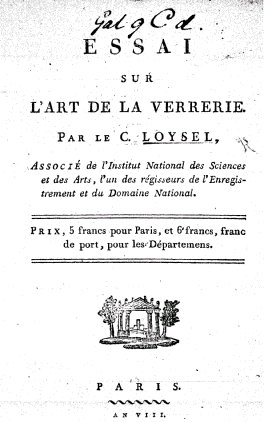
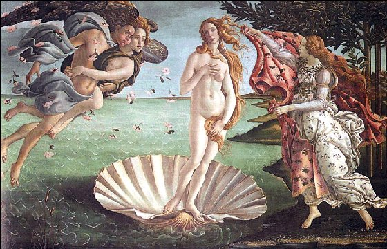
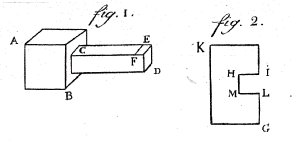
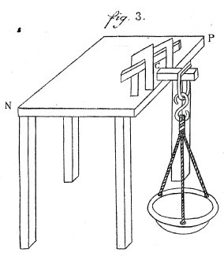
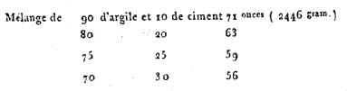
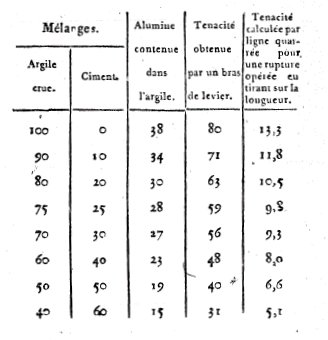
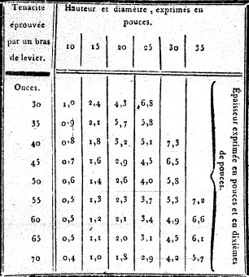
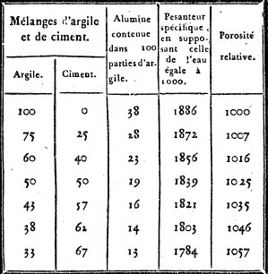
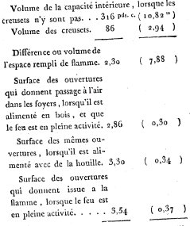

ESSAI SUR L'ART DE LA VERRERIE. PAR LE C. LOYSEL
PREMIERE PARTIE
revu le 18 décembre 2001
ASSOCIÉ de l'Institut National des Sciences et des Arts, l'un des régisseurs de l'Enregistrement et du Domaine National, PRIX, 5 francs pour Paris, et 6 francs, franc de port, pour les Départements, PARIS. An VIII.
Plan : discours préliminaire - Introduction - Première partie [fourneaux et creusets - essai des argiles - qualité des argiles - ténacité des argiles - TABLE I - TABLE II - TABLE III - extraction des terres - préparation des terres - fours de fusion - briques molles - briques séchées - pots et creusets] - Deuxième partie [substances combustibles et dimension des fours de fusion] - Troisième partie [température des fourneaux] - Quatrième partie [choix et préparation des matières - silice - chaux - alkali fixe - potasse - quantité de potasse...]
Préambule : l'ensemble de la section s'intitule Traité du Vitriol. Et pourtant, ce n'est point de l'acide vitriolique dont nous entendons parler, mais du VITRIOL des alchimistes, autrement dit de l'ATHANOR secret ou du VASE de NATURE. Il nous a semblé qu'il serait utile de mettre à la disposition des lecteurs un ouvrage de référence en ce domaine. Aussi notre choix s'est-il porté vers un ouvrage du C. Loysel, qui fut membre associé de l'Académie des sciences [section Physique]. Il rédigea l'Essai sur l'Art de la Verrerie. Ce texte provient des Archives de la Révolution française, reproduction de l'éd. de Paris, de l'impr. des instructions décadaires, recueil des lois et guide des notaires, an VIII [1799-1800], identifié comme N056973 [Num. BNF de l'éd. de [S.l.] : Micro Graphix, cop. 1993.]. Le VITRIOL est un véritable serpent de mer au royaume de l'alchimie. Souvent entr'aperçu, mais jamais saisi, souvent dessiné mais jamais pris sur le vif, il fuit à la moindre tentative d'appropriation et se dérobe immanquablement sous le feu des apprentis artistes. Seuls de rares élus ont su ménager leurs feux en sorte qu'ils puissent en extraire la quintessence, qui est, au vrai, l'escarboucle des Sages. Ce VITRIOL a causé bien des tracas aux alchimistes et a été cause, selon Nicolas Flamel, de « mille brouilleries ». Il a causé la perte, soit réelle, soit par misère, de quantités d'impétrants qui n'ont pas lu les textes avec toute l'application désirable, c'est-à-dire qui n'ont pas chaussé la paire de binocles idoine, qui ne se sont point munis du bourdon de pèlerin et qui, enfin, n'ont pas jugé utiles de mettre leur pas dans ceux de dame Nature, notre Diane.

Aussi, est-ce avec beaucoup d'à propos que Michel Maier a fait dessiner la gravure LXII de son Atalanta fugiens où il exprime ces nécessités de l'Art. D'autres auteurs se sont abrités derrière l'acronyme formé par les lettres V.I.T.R.I.O.L. dont le sens a été donné plusieurs fois ici [1, 2, 3, 4, 5, 6,]. Nous ne nous arrêterons pas sur ces traductions vulgaires que certains ont cru bon d'apposer au portique des Sages. C'est qu'il s'agit de l'Introïtus de l'oeuvre, à l'image de celui du Philalèthe. Que, sans ce vaisseau de nature, rien n'est fait. Oeuvrez donc sur le dragon rouge, sur le loup gris, gageons - et ce n'est qu'avec tristesse, notez-le bien - que vous ne récolterez que du vent. Ce vent que vous n'avez point réussi à saisir est celui qui est masqué par le couple Amphion et Zéthos, vents du Sud. Ce sont ces vents que l'on observe sur l'extraordinaire tableau de Botticelli où l'on assiste à la naissance d'Aphrodite. Quand bien même des commentateurs qui ne sont pas au fait des secrets hermétiques ont cru y reconnaître Zéphyre.

Nous n'avons pas reçu licence de commenter ce tableau absolument unique, n'étant point versé en peinture, mais en revanche, nous affirmons sans détours que les personnages représentés en haut et à gauche sont bien ceux que nous avons nommés. Au reste, peu importe puisque, nous venons de le déplorer, la connaissance du vrai VITRIOL faisant faux bon à l'impétrant, celui-ci ne pourra pas contempler ce sublime spectacle que, Newton, en toute hypothèse, vit puisqu'il affirme dans ses Notes : « j'ai vu le Sel des philosophes ». Ce sel introuvable, les alchimistes affirment pourtant que chacun peut le trouver chez soi. Certes, cela n'est plus possible actuellement et certains ont même prétendu que le chemin suivi par Fulcanelli n'était plus praticable à ce jour, non pas tant parce qu'à présent environné de ronces, il se dérobe à la vue, mais bien plutôt parce que la voie en a été perdue. Les ronces, en effet, ne sauraient constituer un obstacle réel à l'Adepte qui sait les saisir et les utiliser. Ce n'est pas une figure de style que nous exposons ici, mais une vérité scientifique établie dans cet Art de la Verrerie. Tous les Adeptes en ont parlé à mots couverts, comme sous des cendres refroidies mais qui conservent tout de même le FEU secret, qui ne demande que le moyen de se manifester, passant de l'occulte à la puissance, par sa conjonction canonique avec l'EAU et l'AIR. Des trois éléments, l'Artiste n'aura guère de difficulté pour y trouver sa TERRE, le quatrième, celui marqué par le chiffre 4 qui apparaît au médaillon central de la cheminée alchimique du château de Fontenay-Le-Comte riche par ses demeures philosophales et par l'amitié, pour l'heure encore virtuelle, qui nous lie à plusieurs personnes qui nous ont aidé à en capter les rayons ignés. Qu'on se le dise : Fontenay est une riche terre ! Mais revenons à cet Art de la Verrerie. C'est une oeuvre supérieure, indubitablement. Un écrit complet sur l'art de faire le verre. Or, de toute éternité, les Adeptes nous ont enseigné qu'il n'y avait pas loin entre faire du verre et bâtir la Pierre. A cet égard, on pourra lire ce qu'écrivait jadis Zozime : « construis, mon ami, un temple monolithe, etc. » - voyez notre Materia prima. Zozime est peut-être l'Auteur qui a le plus fait progresser l'Art Sacré ou qui, du moins, en a fait apparaître les fondements qui, jusqu'alors, avaient pu se perdre dans les linéaments. Déjà, le mot de céruse, qui dit tout, est prononcé. Il vaut la peine de citer à nouveau le passage de la Collection des Alchimistes Grecs, que l'on doit à Marcelin Berthelot :
« Construis, mon ami, un temple monolithe, semblable à la céruse, à l'albâtre, un temple qui n'ait ni commencement ni fin, dans l'intérieur duquel se trouve une source de l'eau la plus pure, brillante comme le soleil. C'est l'épée à la main qu'il faut chercher à y pénétrer, car l'entrée est étroite. Elle est gardée par un dragon qu'on doit tuer et écorcher. En réunissant ses chairs et ses os, il faut en faire un piédestal sur lequel tu monteras pour arriver dans le temple où tu trouveras ce que tu cherches. Car le prêtre, qui est l'homme d'airain que tu vois assis près de la source, change de nature et se transforme en homme d'argent, qui lui-même, si tu le désires, peut se transformer en homme d'or...»
Nous affirmons ici que personne - ce n'est sans doute pas Zozime, le texte étant en toute hypothèse soit apocryphe, soit pseudépigraphe - ne s'est exprimé sur le Sujet des Sages de manière aussi concise ni aussi véridique. Les mots clefs ont été soulignés et nous laissons au lecteur toute latitude pour parcourir le labyrinthe que nous avons tissé, à la recherche du fil d'Ariane qui le mènera, en lieu sûr, de la céruse à l'albâtre des Sages. Redisons-le encore une fois, au risque de paraître râbacheur, tout est dit dans ces sept lignes. L'art de faire le verre contracte des rapports avec l'art de faire l'escarboucle tant convoitée. Pourquoi ? C'est là une question que nous laisserons sans réponse, non pas qu'elle nous soit inconnue mais parce que son évidence est telle que ce serait faire affront au lecteur que de lui livrer le reste du secret...Secret d'ailleurs de pure forme depuis les belles expériences de Jacques-Joseph Ebelmen, de eu précédé par Pierre Berthier, et suivi par Henri de Sainte-Claire Deville. Ce grand savant eut l'occasion, certainement, d'avoir entre ses mains le précieux Sel des Philosophes. Mais ce n'était pas celui que Newton eut, assurément, entre les mains. Est-ce à dire qu'il y eut confusion ? Certes non. Du moins si l'on fait l'hypothèse suivante : que Newton eut un sel entre les mains et que ce sel, selon toute apparence, devait avoir rapport avec le nitre, mais non le salpêtre vulgaire qui se recueille même dans les étables des paysans. Non. Ce serait assurément trop peu pour un personnage de telle condition. Maître de la Monnaie à Londres, ne l'oublions pas. Il y a là assurément comme un dessin [un dessein] de prédestination et l'on ne saurait, à bon droit, n'y voir que pur hasard. Que Newton, physicien renommé, mathématicien, co-inventeur du calcul infinitésimal avec Leibnitz, explorateur de la lumière spectrale, scrutateur des Saintes Ecritures, ait été aussi alchimiste, ne peut décidément que laisser rêveur. Mais hélas ! Il s'engagea, par trop de confiance dans le symbolisme fourbe des alchimistes, dans la voie de la stibine qui ne pouvait que le conduire « droit dans le mur » et il appliqua son génie à une chimère totale. Assurément, la science y a gagné l'Alliage de Newton, à base de bismuth, et de quoi jouer avec le concept de paradigme ! Ce en quoi se sont employés les historiens des sciences qui n'ont évidemment vu goutte dans les écrits des Sages, ce qui a fait la joie des vrais Adeptes, ce qui, en terme de cabale se traduit par un mot : l'humour. Qui ne sait pas ce qu'est l'humour bien tempéré ne sera jamais au fait de l'Art Sacré. C'est-à-dire, qui ne connaît la vertu essentielle et roborrative du mot ESPRIT. De là à jouer sur les mots, il n'y a qu'un pas que l'on ne peut franchir si l'on n'a pas compris la SUBTILITE des textes alchimiques. Subtilité qui permet d'en comprendre le VERBE. Et comme chacun sait, le VERBE s'est fait TERRE. Nous ne saurions mieux résumer la pensée véhiculée par l'Art d'Hermès.
Il est bien difficile, à ce stade, d'expliquer le rapport, évident pourtant, qui unit la science hermétique et l'Art de la Verrerie. Ou du moins, ce rapport nous apparaît-il d'une telle proximité qu'il en devient pour nous comme consubstantiel. Il y là, de toute évidence, une indication. En quoi le verre est-il proche de la Pierre Philosophale ? Eh bien ! Nous avons abordé ce sujet dans l'historique du Mercure. Le rapport est étroit entre le verre et la Pierre au rouge, et du même ordre parr apport à l'art du potier. Raison pour laquelle Fulcanelli et E. Canseliet insistaient sur l'oeuvre de Piccolpassi. Les mêmes substances de base sont utilisées et ce n'est que la quantité de calorique et le poids des matières qui diffèrent assez notablement. L'art de la verrerie indique donc clairement le chemin à suivre dans le dédale du grand magistère et peut être lue avec profit par l'étudiant débutant. Loysel fait voir des procédés techniques qui ne sont indiqués dans aucun autre traité et son exposé se situe dans une situation historique idéale pour la compréhension de la pensée. L'An VIII est encore à cheval, en effet, entre le XVIIIe et le XIXe siècle et du reste, nous avons modernisé l'écriture dans bien des cas. Loysel donne le nom d'un sel possible, sinon probable, issu de l'urine et connu anciennement comme le sel microcosmique. Malgré nos recherches, nous n'avons pu avoir des renseignements complémentaires sur ce sel, qui est évidemment un phosphate acide. Loysel donne plusieurs procédés de préparation d'imitations de pierres précieuses ainsi que tous détails utiles concernant les alkalis.
En somme, cet Essai sur l'Art de la Verrerie donne des bases solides dans l'apprentissage du Magistère. Certes, il ne faudrait pas y voir un traité sur l'Art sacré. Non. Mais quantités de préparations, de tours de main, de descriptions, se retrouvent lors de l'époque de la Grande Coction. Il y a donc pour nous, analogie entre le travail du verre vulgaire et celui des alchimistes. La différence entre ces deux verres est semblable à celle qu'on observe entre la poterie et la plus fine porcelaine. Cette section poursuit et complète le Compendium, section dans laquelle pratiquement tous les arcanes de l'oeuvre sont évoqués, mais sous une forme séparée. C'est une synthèse que nous avons ici, portant sur tous les points et en particulier celui du calorique, avec des formules et des tables permettant d'avoir des informations sur la température d'un corpuscule situé dans une sphère ou un hémisphère.
Remerciements : je dois de nombreuses corrections de fautes dans cette page à M. Marc-Gérald Cibard. Qu'il trouve ici l'expression de ma gratitude.
¯
L'ART de la verrerie a été connu dès la plus haute antiquité. Les verreries des Phéniciens étaient célèbres il y a plus de trois mille ans. On y exécutait des ouvrages en verres fins qui donnèrent lieu à un commerce considérable, dont l'entrepôt était à Sidon et à Tyr [pour cette introduction, voir la section sur le Mercure]. On y fabriquait des verres de couleur imitant les pierres précieuses naturelles, ce qui suppose des connaissances étendues sur l'emploi des substances métalliques dans la vitrification, et par conséquent celle des verres pesants ou cristaux, soit blancs, soit colorés. On savait appliquer l'or sur le verre, le travailler au tour, le tailler, etc. Ainsi, tout ce que la physique moderne nous a appris à exécuter dans l'art de la verrerie, était connu des Phéniciens. La nature avait mis à leur disposition les matières premières dont ils pouvaient avoir besoin. Des forêts considérables fournissaient le combustible.
Plusieurs fleuves et notamment le Belus [1, 2] offraient le plus beau sable; enfin, l'Egypte procurait pour fondant le natrum [ou natron], et les côtes maritimes, des soudes de diverses qualités. Avec tant de moyens, un génie industrieux et commerçant, il n'est pas étonnant que les Phéniciens aient porté l'art de la verrerie à un si haut degré de perfection. Malgré les guerres fréquentes qu'ils eurent à soutenir, les ravages causés par des tremblements de terre et la conquête que les Arabes Musulmans firent de ce pays, au septième siècle de l'ère chrétienne, la pratique de l'art de la verrerie s'y était conservée.
C'est de là qu'elle passa heureusement en Europe, du temps des Croisades, aux douzième et treizième siècles, cent ans, à peu près, avant l'invasion des Mammelucks qui ravageront tout le pays [vers cette époque, on observa la transmission des textes alchimiques par le biais des Arabes vers l'Occident -].
La puissance navale et le commerce des Vénitiens avaient beaucoup d'analogie avec celles des anciens Phéniciens : aussi Venise profita-t-elle particulièrement de l'émigration des artistes réfugiés de l'Asie. Venise eut des verreries à l'instar de la Phénicie [voir en particulier le cas de l'aventurine -].
On ignore si les Phéniciens fabriquaient des miroirs de verre, et si cette branche d'industrie fut apportée par eux en Europe ; mais Venise ne tarda pas à fonder la première manufacture de glaces qui y ait existé. Cette branche d'industrie y est restée exclusivement concentrée pendant plus de quatre siècles. Quelques vases de verre commun, trouvés dans des tombeaux anciens, dans la forêt de St.-Gobain, font présumer qu'il a pu autrefois exister, dans les Gaules, des fabriques de verre; mais, soit que ces verres y aient été fabriqués, soit qu'ils y aient été apportés d'ailleurs, ils attestent toutes fois qu'on n'y connaissait que des ouvrages très communs.
Il faut remonter au temps des Croisades pour l'histoire de l'établissement de nos principales verreries. Jusqu'au dix-septième siècle, on n'a su y fabriquer que de la gobeleterie commune, des verres à vitre communs en plats, et des bouteilles. Le ministère de Colbert est l'époque la plus remarquable des progrès de l'industrie en France. Ce grand administrateur a jeté les fondements de nos principales manufactures : il connaissait toutes les ressources que le territoire français devait procurer un jour pour satisfaire à nos besoins, nous délivrer des tributs que nous payions à l'industrie étrangère, et la soumettre elle-même aux nôtres ; enfin, combien l'aisance des citoyens, la population et la force d'un état dépendent de ses moyens industriels. Les manufactures à feu, sources principales de toutes les autres, furent encouragées par lui ; et, dans ce nombre, les fabriques de verre fixèrent particulièrement son attention ; il voulut qu'elles ne le cédassent en rien à celles des Vénitiens. Ses intentions furent bientôt remplies, le succès surpassa même les espérances qu'on en avait conçues des artistes français, établis à Venise, avaient eu occasion de prendre, à Murano, une connaissance exacte des procédés qu'on y employait pour la fabrication des glaces ; l'amour de leur pays et la réputation de Colbert les fit rentrer en France, avec l'espoir de l'enrichir de cette branche brillante de commerce et d'industrie. Le ministre les accueillit, et les autorisa à choisir le local qu'ils croiraient le plus convenable à leur entreprise. La physique formait à peine alors un corps de doctrine parmi nous. Les connaissances chimiques étaient d'ailleurs trop peu avancées pour hasarder la moindre innovation dans les opérations de cet art. Ces hommes prudents s'attachèrent avec scrupule à imiter jusqu'au site du local, la position des ateliers, relativement aux courants d'air.En 1665 ils se fixèrent à Tourlaville, près Cherbourg (départ. de la Manche), situation qui leur donnait encore la facilité de faire arriver avec économie, par mer, les matières premières, et d'expédier les ouvrages fabriqués. Leurs travaux obtinrent le succès qu'ils s'en étaient promis. La renommée leur donna une célébrité méritée et les amateurs des sciences et des arts s'empressèrent à l'envi de les visiter. Les plus grandes glaces que l'on fabriquait à Tourlaville étaient d'environ un mètre et un quart. Cependant le goût de l'architecture, pour la décoration intérieure des appartements, fit bientôt désirer qu'on pût se procurer de plus grands miroirs pour leur ornement. Vingt ans après la fondation de la glacerie de Tourlaville, un artiste français, ingénieux, que l'on croit s'être appelle Abraham Thevart, inventa le coulage des glaces, au moyen duquel il put en fabriquer de près de trois mètres de hauteur. Il forma son premier établissement à Paris, dans le faubourg Antoine ; mais le haut prix du combustible et de la main-d'œuvre l'obligèrent bientôt à transporter son industrie loin de cette grande ville. Il demanda au gouvernement et obtint de transporter son établissement à St.-Gobain (département de l'Aisne), où il se fixa en 1691, et jeta les fondements de la manufacture la plus importante de ce genre qui existe encore aujourd'hui.
A l'exception des compositions ou mélanges de matières vitrifiables, tout avait été à créer par l'inventeur du coulage du verre. Il fallut des ateliers et des outils particuliers, changer les dimensions des fours de fusion, des creusets et des fourneaux de recuisson, établir de nouvelles manœuvres pour le travail du verre et ses apprêts. Le génie du même artiste surmonta tous ces obstacles, ne laissant à ses successeurs qu'à perfectionner son ouvrage à mesure que la physique ferait des progrès. Tant de succès de la part des Français excitèrent l'émulation et la rivalité des autres peuples. Venise était encore regardée par eux comme la métropole des verreries de l'Europe, comme l'école centrale où il fallait puiser l'instruction dans ce genre. Les Allemands s'empressèrent à leur tour d'aller y chercher des connaissances pratiques sur le travail du verre. Les chimistes allemands s'attachèrent à la préparation des matières qui pouvaient fournir un verre d'une pâte blanche, et leurs artistes en firent l'application à la fabrication des verres à vitres blancs en manchons, connus encore aujourd'hui sous le nom de verres de Bohême, pays où ce genre d'industrie a pris naissance, et qui n'est qu'une légère modification du soufflage des glaces, tel qu'il existait à Venise.
Tandis que les opérations chimiques de l'art de la verrerie se perfectionnaient chez les autres peuples et dans les petites verreries françaises, le coulage des glaces est resté pendant plus de 60 ans dans l'état où son inventeur l'avait laissé. Le privilège exclusif dont jouissaient les intéressés dans la manufacture des glaces en était la cause principale ; mais il leur fallut bien enfin sortir de cet engourdissement, lorsqu'il s'établit d'autres manufactures de coulage, en France, en Espagne, en Allemagne et en Angleterre. On examina chaque partie séparément, on profita des lumières d'une mécanique raisonnée, et l'on fit aux préparations des matières premières l'application des principes de la chimie. Tous ces changements furent dirigés par d'habiles artistes, et leur succès a continué d'assurer jusqu'ici, à cette manufacture, la supériorité sur ses concurrents.La méthode du coulage permet de mettre en œuvre des masses considérables de verre. La manufacture de St.-Gobain s'est distinguée de toutes les autres par la grandeur des glaces qu'elle fournit. C'est là qu'avaient été fabriquées les deux glaces qui ont servi à exécuter le fameux verre ardent du Louvre, employé à réunir les rayons du soleil, et qui procurait un degré de chaleur jusqu'alors inconnu ; cette lentille creuse ayant été cassée, le gouvernement, pour la remplacer et pour obtenir encore un plus grand degré de chaleur, a fait fabriquer à St-Gobain un plateau de verre massif de deux mètres de diamètre sur 0,067 d'épaisseur. C'est l'ouvrage en verre le plus considérable que l'on connaisse. Il pèse plus de 500 kilogrammes.
Les Anglais ont tenté à grands frais de rivaliser avec nous sur la fabrication des glaces. Ils n'ont pu jusqu'ici le faire avec avantage ; mais ils nous ont devancé dans celle des cristaux ou verres pesants. La difficulté de faire ce beau verre blanc en fondant et travaillant à pots découverts, lorsqu'on brûle de la houille ou charbon de terre les a obligés à ne faire usage que de pots couverts pour leur verrerie blanche ; et comme dans le même four la chaleur est beaucoup plus faible dans l'intérieur d'un pot couvert que dans celui qui ne l'est pas, on ne peut employer dans les pots couverts que des matières très fusibles; aussi les verres blancs Anglais sont-ils tous chargés d'oxydes métalliques. Voilà pourquoi ils ont dû tourner de préférence leurs recherches vers la fabrication des cristaux ou verres pesants ; mais tout ce que peuvent les Anglais, à cet égard, nous le pouvons et l'exécutons ; nos fabriques de cristaux quoiqu'établies plus tard ne le cèdent en rien à celles d'Angleterre, et les verreries du continent alimentées avec du bois, au lieu de houille, conservent jusqu'ici l'avantage exclusif de la fabrication des verres blancs légers, elles en jouiront aussi longtemps que le bois ne leur manquera pas.
Les connaissances pratiques de l'art de la verrerie ont fourni des secours puissants pour augmenter nos jouissances. C'est ainsi que les fabriques de verre ont donné lieu à l'usage des vases de diverses espèces pour nos usages domestiques, aux vases d'ornements et aux miroirs qui embellissent nos appartements, à celui des vitres qui nous font jouir des bienfaits vivifiants de la lumière sans être exposés aux injures du temps ; nous leur devons les instruments les plus précieux de la physique moderne, les vases et instruments qui servent au chimiste à découvrir et imiter les procédés de la nature, à se procurer et conserver les réactifs les plus puissants, la fabrication des lunettes pour suppléer au défaut naturel de nos yeux, ou à celui qu'occasionne le travail ou la vieillesse sur ces organes [hors mis l'effet sur la vieillesse, évidemment chimérique car basé sur le fabuleux élixir de longue vie, toutes les propositions qui précèdent sont applicables à la science d'Hermès, en particulier concernant les procédés qui imitent ceux de la nature] ; la matière qui a servi à construire les lunettes d'approche, auxquelles sont dues les découvertes modernes de l'astronomie, ses progrès et ceux de la navigation ; enfin, c'est par le moyen d'un prisme de verre que Newton [Newton a été le dernier alchimiste de la grande tradition avant les Adeptes du XIXe siècle comme Cyliani. Le lecteur curieux pourra étudier une biographie monumentale sur le physicien par R. Westphall, Flammarion, 1994 et ses études alchimiques dans les Fondements de l'alchimie de Newton, par B.J. Dobbs, Trédaniel, 1981] analysa la lumière et jeta les fondements de l'optique.
Le perfectionnement des arts et particulièrement de celui de la verrerie est intimement lié aux progrès des sciences physiques. Vingt siècles de barbarie pendant lesquels les sciences ont été étouffées y ont dû produire le même effet sur les arts ; on n'avait pu en conserver que quelques procédés devenus des secrets pour des artistes plus occupés d'un travail manuel que de spéculations théoriques. A la renaissance des sciences, ces procédés furent recueillis, mais sans former un véritable corps de doctrine propre à diriger les artistes. L'ouvrage de Néri sur l'art de la verrerie est un des premiers qui ait réveillé l'attention sur ses différentes branches. Il a servi de manuel à presque toutes nos fabriques, mais on y trouve peu de choses sur ce qui constitue les principes de l'art. La collection des arts et métiers de l'académie des sciences, et celle de l'encyclopédie sont les dépôts précieux qui transmettront à la postérité l'état actuel de notre industrie. Que de peines et de dépenses, l'antiquité nous eut épargnées, si elle eût pris les mêmes précautions ! mais ce n'est que depuis l'impulsion donnée à la chimie dans ces derniers temps que l'on a pu comparer les divers phénomènes que présente l'art de la verrerie.
Les travaux de MM. Pott et Achard, en Allemagne, ceux de Scheele et Bergmann, en Suède ; des citoyens d'Arcet, Bosc d'Antic [Oeuvres de M. Bosc d'Antic, contenant plusieurs mémoires sur l'art de la verrerie, sur la faïencerie, la poterie, l'art des forges, la minéralogie, l'électricité et sur la médecine (1780)] et des autres chimistes, en France, mettent aujourd'hui les artistes à même de diriger leurs travaux, d'après une connaissance raisonnée et solide des principes de la physique. Le but que je me suis proposé, est de rassembler ces principes, et d'en indiquer l'application aux principaux phénomènes et à la pratique de l'art.1. Le verre est le produit qui résulte de la combinaison des substances suivantes , par leur fusion à un feu violent et suffisamment continué :
- 1°. D'une ou de plusieurs terres avec quelques sels ;
- 2°. D'une ou de plusieurs terres avec des sels et des oxydes métalliques.
- 3°. D'une ou de plusieurs terres avec des oxydes métalliques.
- 4°. De plusieurs terres entre elles
[ces définitions, à peu de choses près, sont valables pour résumer le travail du Grand Oeuvre. Mais où l'Art sacré se démarque de cette spagyrie, est dans l'utilisation combinée d'une terre, présente sous la forme d'oxyde, d'un autre oxyde métallique qui assure la teinture et de sels qui permettent la liaison entre les deux extrémités du vaisseau de nature. Autre différence : le feu dont le régime est plus varié et qui doit être continué beaucoup plus longtemps que pour le travail du verre.]
Les travaux en grand, dans l'art de la verrerie, ne s'appliquent qu'à la première ou à la seconde espèce. La première comprend la classe nombreuse des verres légers, tels que les verres blancs de gobeleterie ordinaire ; ceux employés dans les laboratoires de chimie et des arts, dans les cabinets de physique et pour l'optique ; les verres blancs à vitres et les glaces, les verres demi-blancs pour la gobeleterie commune, et les verres à vitres communs ; les verres verds à bouteilles, etc. ; les verres légers colorés, pour des vases d'ornement ou pour des vitres. La seconde espèce comprend la classe des cristaux ou verres pesants tels que la gobeleterie en cristal, les lustres, et certains verres d'optique, les cristaux colorés, employés en vases d'ornement ou pour imiter les pierres précieuses.2. Les matières premières employées à la fabrication des verres légers blancs, demi-blancs et à bouteilles, sont la terre siliceuse, ou plutôt le quartz, la terre calcaire ou bien la chaux et l'alkali fixe. [toutes ces matières jouent un rôle fondamental dans l'hypothèse que nous défendons sur la nature de la Pierre Philosophale] Les matières propres à la fabrication du cristal sont le quartz , l'alkali fixe et un oxyde métallique (communément l'oxyde rouge de plomb, connu sons le nom de minium).[cet oxyde joue, à proprement parler, celui d'Âme dans la Pierre. Voyez notre Soufre]
Quant aux couleurs à porter dans le verre, c'est par le moyen des oxydes métalliques qu'on y parvient. Les qualités qui distinguent chaque espèce de verre ont donné lieu aux différentes branches de l'art de la verrerie ; mais toutes les fabrications reposent sur des principes communs qui font l'objet principal de cet ouvrage, et dont j'aurai soin de faire l'application à chacune.3. La fabrication du verre exige des fourneaux et des creusets dont la matière résiste à l'action du feu et des flux ou fondants, sans se fondre eux-mêmes. Il faut un feu actif et longtemps continué pour opérer la vitrification, un choix et des préparations particulières de matières pour chaque espèce de verre ; enfin, des précautions pour sa mise en œuvre et sa recuisson. Ces conditions et les qualités propres à chaque espèce de verre ont donné lieu à la division de cet ouvrage en neuf parties. [cette partie manquait dans notre Compendium où les points touchant à la fusion, l'altération et la ténacité des argiles servant à fabriquer les pots et les creusets n'étaient pas évoqués.]
- La première, traite du choix, de la préparation et de l'emploi des substances propres à la fabrication des fourneaux et des creusets ;
- La deuxième, du choix et de l'emploi des substances combustibles, et du rapport que doivent avoir entr'elles les principales dimensions du four de fusion ;
- La troisième, du degré de feu ou de la température des fourneaux ;
- La quatrième, du choix et de la préparation des matières vitrifiables ;
- La cinquième, des substances propres à purifier le verre ;
- La sixième, de la fusion des matières vitrifiables ;
- La septième, de la fabrication du cristal ou verre blanc pesant ;
- La huitième, de la pesanteur spécifique du verre ;
- La neuvième, des verres colorés.[on voit l'étendue de la matière traitée par Loysel et des points de concordance précis qu'on ne manquera pas de trouver avec les opérations des trois parties de l'oeuvre. Rappelons que le 1er oeuvre consiste en la préparation des matières premières et que, bien sûr, il y en a plus d'une...Le 2ème oeuvre est la préparation du Bain des Astres, nommé aussi Lion vert ou Mercure commun. Le 3ème oeuvre consiste à mixer les substances et à se servir d'un glaive de feu. Préparer les matières premières, c'est aussi préparer le contenant, et donc les fourneaux et creusets sans lesquels il n'est point question de démarrer le travail. On peut ainsi considérer le 1er oeuvre comme allant de la partie I à la partie III ; le 2ème de la partie IV à VI et le 3ème, de la VII à la IX. ]
Du choix, de la préparation et de l'emploi des substances propres à la fabrication des fourneaux et des creusets
4. La matière des fourneaux et des creusets doit réunir à la fois trois conditions principales :
- La première, d'être infusible au degré de feu qu'on doit employer pour la vitrification qu'on se propose ;
- La seconde, de ne se laisser que peu ou point attaquer par les compositions de matières vitrifiables en fusion ;
- La troisième, de pouvoir prendre et conserver les formes les plus avantageuses aux constructions.L'argile possède ces qualités au plus haut degré. Aussi, quoiqu'on fasse usage du grès dans quelques verreries, pour la construction des fours de fusion ou, de quelques-unes de leurs parties ; quoiqu'on mêle du quartz avec l'argile, pour ces mêmes constructions, cependant l'usage de l'argile a prévalu, presque partout, pour la construction des fourneaux, et elle est généralement employée pour la fabrication des creusets. L'argile la plus pure est au moins composée de deux substances, d'alumine et de quartz ; chacune d'elles est infusible au feu de nos fournaux, soit séparément, soit conjointement ; mais les autres propriétés de l'argile dépendent de la proportion d'alumine qui s'y trouve. C'est elle qui lui donne la ductilité qui la distingue de toutes les autres terres et la rend si précieuse. [on a là déjà une idée du poids de nature opposé au poids de l'Art, dès la confection du vase externe. L'alumine, en bonne proportion, sert donc tout autant à la confection du vase qu'à celle de la Pierre]
Si les argiles naturelles ne contenaient que les deux substances précédentes, nous n'aurions à nous occuper qu'a en reconnaître les proportions ; mais le plus souvent il s'y en trouve d'autres qui en altèrent les qualités.5. Quoique l'alumine seule soit infusible au feu de nos fourneaux, néanmoins son mélange avec d'autres terres ou avec des substances salines ou métalliques peut la rendre fusible. Il n'y en a même que très peu qui n'altèrent pas sa qualité réfractaire. Toutes les fois que l'alumine se trouve mêlée avec des substances fusibles par elles-mêmes et qui sont assez fixes pour ne se dissiper qu'au feu de verrerie ou même y résister, les ouvrages qui en résultent perdent leur solidité. Ainsi, ces mélanges ne peuvent être employés ni à la fabrication des fourneaux, ni à celle des creusets. [mais ces mélanges présentent le plus haut intérêt dans la préparation de la Pierre. C'est pourquoi un Adepte, qui s'est fait passer pour Albert Le Grand, a écrit un ouvrage qui se nomme le Composé des Composés.] Il n'est pas même nécessaire qu'il y ait combinaison entre l'alumine et ces substances fusibles, ou dissolution de l'une par les autres ; il suffit que les substances fondues puissent pénétrer au travers des pores de la masse d'alumine, en séparer les parties et les tenir suspendues, comme il lui arrive à la température ordinaire, lorsqu'elle est délayée et suspendue dans l'eau. Les substances précédentes ne sont pas les seules dont le mélange avec l'alumine puisse détruire la solidité des ouvrages qui en sont formés. D'autres substances fixes et infusibles seules au feu de verrerie peuvent produire le même effet. [on voit ainsi opposé le fixe au volatil. Le volatil n'est pas le caractère aérien que l'on reconnaît d'habitude et les alchimistes ont rivalisé d'astuce pour faire croire cela. Mais le volatil, c'est aussi le fluide et le visqueux. Ainsi, l'une des substances propres à empêcher la fixité n'est autre que la fluorine ou fluorite, appelée encore spath fluor et que les Anciens nommaient myrrhe. Les vases murrins étaient très appréciés ; ils ne valaient pas, toutefois, le prix des ustensiles en verre malléable dont Sainte Claire-Deville a exposé la synthèse et qui, pour Tibère, valait plus que l'or - cf. Atalanta fugiens et Ariadne - ]
La terre calcaire est dans ce cas. Exposée seule au feu de verrerie, elle ne perd que son acide carbonique, se convertit en chaux et y reste entièrement infusible ; mais son mélange avec l'alumine, autre substance réfractaire, devient fusible. Il en résulte une véritable combinaison de l'une avec l'autre, une vitrification complète. Il en est de même du mélange en proportions convenables, de la terre calcaire avec l'argile composée d'alumine et de quartz.
Ces phénomènes étaient inexplicables dans les principes de l'ancienne chimie. [il est pour nous pratiquement hors de doute que certains alchimistes ont mis au point des procédés de cette sorte, qu'ils ont tenu secrets jusqu'au temps de Lavoisier et même, de Stahl.] Il a même fallu des exemples frappants, tirés de quelques autres substances, pour dissiper tous les doutes qu'on s'efforçait d'élever sur les résultats. C'est ainsi que le citoyen d'ARCET a fait voir qu'un alliage de plomb, de bismuth et d'étain devenait mou, au point de se laisser pétrir à la chaleur de l'eau bouillante, quoique chacun de ces métaux, pris séparément, ne soit fusible qu'à un degré de feu très supérieur. [Newton avait découvert un alliage semblable lors de ces expériences alchimiques -]6. La fusibilité de ces sortes de mélanges a été expliquée en général, d'une manière satisfaisante, par le citoyen LAPLACE. Selon lui, une substance est infusible parce que ses molécules sont adhérentes entr'elles, et qu'elles sont retenues par la force d'agrégation qui ne peut être vaincue par la force expansive du calorique ; de sorte qu'on peut considérer ces deux forces comme opposées. Si une autre substance agit par son affinité sur les molécules de celle qui était infusible, alors elle concourt avec l'action de la chaleur pour opérer la désunion de ses parties ; et si l'on représentait ces trois forces par des nombres, il faudrait opposer au nombre qui représenterait la résistance de l'agrégation, ceux qui représenteraient l'action de la chaleur et celle de l'affinité de la seconde substance. [en alchimie, on parle de l'Aimant et de l'Acier des Sages. l'Aimant est précisément cette matière qui permet d'opposer des forces de cohésion à d'autres ou qui fait précipiter des substances de leur dissolution saline. L'Acier est le Sel fixe incombustible. Voyez Matière.]
7. Du choix et de la préparation de l'argile dépend la bonté des constructions des fourneaux et des creusets. On ne doit donc rien négliger pour s'assurer si elle jouit des qualités qui la rendent propre à cet usage, puisque sans cette précaution, toutes les dépenses d'une fabrication peuvent être entièrement perdues.
8. Jusqu'ici on n'a point connu dans les verreries, l'art d'essayer les argiles. Le coup-d'œil et l'habitude ont seuls décidé de leur emploi ou de leur exclusion. Cette partie est restée abandonnée à l'insouciance, tandis que celle de la vitrification faisait des progrès rapides. La cause s'en trouve sans doute dans l'ingratitude des travaux préliminaires, toujours moins attrayants que le résultat de belles vitrifications. [Dans son Entrée Ouverte, etc., Philalèthe parle de l'ennui que causent les premières opérations, mais c'est par cabale et l'on ne sait au juste s'il parle de la préparation des matières propres au dissolvant ou de la matière du vase externe.]
Avant de procéder à l'essai de l'argile, on commence par l'éplucher. Cette opération consiste à en séparer les corps étrangers, sensibles à la vue, par le moyen d'un couteau ou le tranchant d'un marteau, lorsqu'elle est sèche, et après l'avoir réduite en morceaux de la grosseur du doigt. Ceux qui s'y rencontrent le plus communément sont des morceaux de charbon, de l'oxyde de fer rouge ou jaune, du sulfure de fer, sous forme de pyrites, substances qui se sont introduites entre les bancs d'argile ou dans les fentes qui les séparent. Il faut encore mettre de ce nombre les morceaux ou grains de sable sur lequel le banc d'argile repose le plus souvent. Si les pyrites sont trop petites ou trop abondamment répandues dans l'argile pour qu'on puisse les en séparer par cette première opération, il faut la faire fondre dans l'eau et l'y délayer sous forme de coulis liquide. On passe le coulis au travers d'un tamis de toile fine de crin. Les pyrites restent sur le tamis. On fait ensuite sécher le coulis, soit à l'air libre, soit sur le feu, en faisant évaporer l'eau. Ce moyen est suffisant pour les essais en petit ; et j'expliquerai ailleurs la méthode d'en séparer l'eau dans les travaux en grand. [ces pyrites martiales ou alumineuses jouent un rôle des plus grands dans l'oeuvre, en particulier lorsqu'elles sont associées à des schistes. C'est l'un des moyens où l'Artiste parvient à faire du FEU avec de l'EAU, en sorte de faire sortir du dragon, le précieux SEL. Mais il y a d'autres moyens d'obtenir de sel. Cette séparation est l'une des allégories de l'oeuvre mettant en cause le Caput Mortuum et la putréfaction. C'est pourquoi Le Breton professe qu'il y a plusieurs putréfactions dans l'oeuvre, qu'il évalue à quatre.]
9. Les propriétés d'une argile dépendent essentiellement de ses parties constituantes. Le premier pas à faire est donc de reconnaître quelles
sont ces parties constituantes et qu'elle est la dose respective de chacune. La méthode suivante, extraite de la dissertation de BERGMANN, sur la terre des Gemmes, en fournit les moyens :Méthodes par laquelle on découvre très-facilement les parties constituantes des Gemmes, par BERGMANN , appliquée à l'essai des argiles.
[notons au passage cette allusion à la terre des gemmes. C'est là une indication majeure. Malheureusement, le traité de Bergmann est introuvable.]
10.
A] Il faut d'abord les réduire en poudre la plus subtile que puisse donner la trituration et la lévigation. (Pour l'argile, il faut d'abord la réduire en poudre par la trituration, et la faire sécher à la température de l'eau bouillante, ou à peu près) ;
B] On mêle une quantité déterminée, en poids, de cette poudre avec le double de soude tombée en efflorescence à l'air ; l'opération est d'autant plus sûre que la quantité de soude est plus considérable ;
C] On place ce mélange dans une petite coupe de fer, dont la cavité est nette et polie, afin que les aspérités, qui se séparent facilement du métal par la calcination, ne s'attachent pas à la masse et n'y portent pas une matière étrangère ;
D] On met la petite coupe au fourneau à air sur une tourte, et on renverse dessus un creuset pour empêcher l'ascension des charbons et des cendres ;
E] On entretient un feu modéré pendant trois ou quatre heures ; si le feu est trop fort la masse adhère au fond. On doit éviter de se servir de soufflets, qui pourraient boursoufler ou scorifier le fer ; on reconnaît que le feu a été bien conduit quand la masse est ferme, bien réunie, et qu'elle peut néanmoins se séparer du fond de la coupe, sans en rien emporter. Cela s'apprend facilement par un ou deux essais ;
F] La masse ainsi enlevée avec soin du vaisseau de fer, doit être pulvérisée dans un mortier d'agate, et ensuite mise dans l'acide muriatique, aidée de la chaleur, pour en extraire tout ce qui est soluble. On juge qu'il ne reste plus rien à extraire, quand le résidu est devenu léger et spongieux ; cependant, pour plus de sûreté, on peut ajouter une nouvelle dose d'acide, et examiner si, après plusieurs heures de digestion, il n'a plus rien dissous ;
G] La dissolution achevée, on recueille le résidu ; on le lave, on le fait sécher et on le pèse. (C'est la silice) Ce qui manque du premier poids indique ce qui a été dissous ;
H] Si la dissolution est jaune, elle annonce la présence du fer ; on la reconnaît cependant plus sûrement par le prussiate de potasse parfaitement saturé , avec lequel il faut d'abord le précipiter ; on recueille le précipité bleu, on le lave, on le dessèche, et la sixième partie de son poids indique la quantité du fer. (Cette quantité de fer, multipliée par 1,43, indique la quantité d'oxyde rouge de fer) ;
J] La dissolution, ainsi privée de la partie métallique, est précipitée par un alkali fixe, dépouillé de tout quartz ; Le résidu lavé, desséché, calciné pendant demi-heure, et exactement pesé, on le laisse tremper à froid environ une heure, dans six fois autant de vinaigre distillé, qui se charge ainsi du calce, (de la chaux ), de la magnésie et de la baryte, s'il s'en trouve, et qui ne dissout une quantité sensible d'alumine, qu'à la faveur d'une longue digestion, (le résidu lavé et desséché indique la quantité d'alumine.) ;
K] La dissolution acéteuse filtrée, on précipite par le carbonate de potasse tout ce qu'elle tient de terreux ; on édulcore le précipité, on le fait sécher et on le pèse. J'indique à dessein le carbonate de potasse, parce qu'en vertu d'une double affinité, il précipite même la baryte, ce que ne fait pas l'alkali caustique ;
L] On examine alors ce qui a été précipité du vinaigre. Si on le jette dans de l'acide sulfurique délayé, le sel qui en résulte en indique très sûrement la base. Avec la baryte, cet acide produit du spath pesant (sulfate de baryte), qui ne se dissout pas, même dans mille fois son poids d'eau bouillante ; avec la chaux, il produit de la sélénite (sulfate de chaux) presqu'insipide sur la langue, soluble dans cinq cents fois son poids d'eau chaude, et dont la dissolution laisse précipiter sur le champ du saccharte calcaire, par l'addition de l'acide saccharin ; avec la magnésie, il forme le sulfate de magnésie ou sel anglais, très-amer, dont l'eau chaude dissout une quantité égale à son poids, et qui est décomposé tout de suite par l'eau de chaux.
N] J'ai annoncé que le résidu laissé par le vinaigre (sect-J.) était de l'alumine. Pour confirmer ce résultat, on traite ce résidu avec trois fois autant d'acide sulfurique concentré, et on pousse l'évaporation par le feu, jusqu'à siccité. Si la base est alumineuse, la masse restante se dissoudra en entier dans le double de son poids d'eau chaude ; la dissolution manifestera sur la langue une saveur astringente ; elle donnera des cristaux octaèdres ; elle sera précipitée sur le champ par l'ammoniaque, et montrera enfin toutes les propriétés qui font reconnaître l'alun. [résumons : la matière doit d'abord être torturée de toutes les manières possibles puis sublimée - lévigation, qui est une sublimation philosophique liquide - on mélange la poudre obtenue avec l'alkali végétal ; la masse est portée au feu dans des conditions de pureté totale ; puis après avoir subi le creuset - crux, croix - cette matière est essayée avec de l'esprit de sel. Le résidu est le sel d'Ammon ou lien du Mercure. Voyez Blasons. On vérifie ensuite si la matière ne contient pas un peu de Soufre rouge. Le résidu est repris par du vinaigre qui attire à lui les bases terreuses - Sel, Magnésie, spath pesant -. Puis on reprend par de l'alkali fixe qui s'empare de la base terreuse. In fine, on peut voir le type de base qui a été précipitée du vinaigre. Dans les trois cas, on trouve un sulfate. Seul le Sel fixe, incombustible, est le résidu laissé par le vinaigre. Ce sel fixe peut être réincrudé et former de l'alun, sel double dont celui qui intéresse notre Art est le sulfate de potasse et d'alumine, corps isomorphe, faut-il le rappeler avec le sulfate double de potasse et de fer, ou de chrome ou de magnésium.]11. La méthode précédente est remarquable par sa simplicité : on y a fait depuis quelques changements, notamment pour déterminer, avec plus de précision, les doses de fer et de baryte ; parce qu'en effet le prusssiate de potasse , dans l'opération de la section H précipite à la fois la baryte, le fer et les autres substances métalliques ; cependant, elle remplit suffisamment notre objet. Quoique l'argile soit rarement exempte de fer et de terre calcaire, cependant si ces deux substances ne s'y trouvent que dans de très petites proportions, l'argile peut encore résister au feu de nos fourneaux. [nous comprenons mieux, maintenant, pourquoi les alchimistes insistent sur le triple vaisseau qui doit conduire l'oeuvre. Il est clair que si le vaisseau extérieur ne tient pas, l'oeuvre est à l'eau.]
Il suffit donc que le maître de verrerie sache, une fois pour toutes, quelle est la plus petite dose d'alumine et de silice à mélanger avec de l'oxyde de fer ou du carbonate de chaux, pour que le mélange commence à n'être plus assez réfractaire pour ses constructions, au degré de feu qu'il emploie. Autrement il suffit de connaître, par expérience, les parties constituantes d'une seule argile, qui jouisse d'une qualité réfractaire, à peine suffisante pour résister au feu que l'on doit employer. Ainsi, par exemple, une argile qui, sur 100 parties, en contiendrait au moins 95, tant de quartz que d'alumine, et moins de 5 de carbonate de chaux et d'oxydes, pourrait encore être employée dans la plupart de nos petites verreries en verre blanc, dont le feu n'est pas très actif [ces quantités sont celles d'une pierre surabondante en principe Sel, qui ne possède pas assez de principe mercuriel : les terres de Samos, de Chio, la terre Cimolienne peuvent prétendre à être telles.] ; mais la proportion d'alumine et de quartz devrait être au moins de 97 sur 100 dans les grands fours de glacerie ou de verre à bouteilles, principalement pour la fabrication des creusets. C'est ce qui rend si rares les argiles propres à l'usage de ces verreries. [c'est l'Acier des Sages, Matière.]
Indépendamment de la méthode générale précédente, le maître de verrerie, dont les travaux sont en activité, peut encore avantageusement en employer de particulières, en exposant l'argile au feu de son four de fusion, soit seule, soit mélangée avec les fondants qu'il emploie dans ses compositions de matières vitrifiables.
De l'essai de l'argile , relativement à sa qualité réfractaire, par la voie sèche.
12. Supposons qu'après avoir converti une argile en pâte et l'avoir bien pétrie ou corroyée, on en forme des bâtons parallélépipèdes d'environ
7 à 8 pouces de longueur (environ 0,2 mètres), sur un pouce d'épaisseur (0,027 m) ; qu'on les laisse sécher d'abord doucement ; qu'on les dresse avec un couteau ou une râpe, et, enfin, en les frottant avec du sable, sur une surface plane ; qu'on les fasse cuire peu-à-peu ; qu'enfin, on les expose dans le four de fusion, suspendus horizontalement aux deux extrémités sur deux supports couverts de sable réfractaire, pendant cinq à six jours, dans un creuset couvert, pour les mettre à l'abri des fumées des fondants ; qu'on les fasse ensuite recuire peu-à-peu et refroidir. Si les bâtons n'ont ni fondu ni plié ; si, en les cassant, on ne remarque aucune boursouflure dans leur intérieur, on peut regarder cette argile comme suffisamment réfractaire pour toutes les parties du four qui ne sont pas exposées à l'action des fondants, et qui n'éprouvent pas un degré de feu supérieur à celui de l'épreuve, telles que les parois du four, connues sous le nom de mormues. La même épreuve peut s'exécuter avec des creusets minces de 5 à 6 pouces de diamètre et de hauteur (1 à 2 décimètres). Mais cette méthode serait insuffisante pour une argile destinée à la construction des sièges, de la voûte du four ou des creusets ; les sièges étant continuellement exposés à l'action, soit d'un bain de verre, soit des matières vitrifiables qui se répandent dessus ; la voûte, à l'action la plus vive du feu et à celle des fondants réduits en vapeurs [d'où toutes ces photos de voûte et d'arcades que l'on aperçoit dans la trilogie fulcanellienne] ; enfin, les creusets à l'action du feu, de la vapeur des fondants, et des matières vitrifiables en fusion. Celle que je vais exposer est fondée sur des considérations particulières, tirées de la quantité plus ou moins grande de matière fondue dans un flux, et dans un temps déterminé, suivant que cette matière est en grande masse ou bien divisée, ou ce qui revient au même, suivant le plus ou moins de surface qu'elle présente à l'action du flux, et aussi suivant la force d'agrégation qui unit les parties de la matière à fondre.13. Si l'on met à fondre dans un creuset, au feu de verrerie, un mélange d'une partie d'alkali fixe et deux de quartz, réduit en poudre, la vitrification sera complète ; si, au lieu d'employer le quartz en poudre, il est en morceaux beaucoup plus gros, la vitrification n'aura lieu qu'à la surface et par couches, de proche en proche. L'action de l'alkali sur cette terre sera lente ; en sorte que la portion de cet alkali qui n'aura pas eu le temps de se combiner avec la silice, sera dissipée par le feu. On n'obtiendra qu'une petite quantité de verre, et il restera beaucoup de quartz non fondu. [cette considération est fondamentale en alchimie : elle fait voir de quelle nature est le lien du Mercure, pourquoi ce lien est nécessaire et ce qui arrive s'il vient à lâcher.]
De même, si l'on emploie un creuset de grès pour contenir des compositions d'alkali fixe et de grès réduit en poudre pour les vitrifier, le même creuset, avant d'être usé, avant que sa matière propre ait pu être elle-même successivement vitrifiée, servira à la vitrification d'un poids cent fois plus grand que le sien, de sable ou de grès de même espèce réduit en poudre.
La même chose arrive, si au lieu d'employer des creusets de grès et des compositions vitrifiables à base siliceuse, on se sert de creusets d'argile dans laquelle il n'y a que de l'alumine et du quartz, et soit exempte de chaux et d'oxydes métalliques. De pareils creusets pourront, avant d'être usés, servir à vitrifier plus de cent fois leur poids de la même argile, avec des doses convenables de fondant. [l'image traditionnelle de l'iconographie est le cygne qui meurt de ses propres plumes, que l'on voit sur l'un des caissons de la galerie du château de Dampierre-sur-Boutonne ; l'allégorie du pélican aussi qui se dépouille de sa propre substance pour en nourrir sa progéniture. Mais il y aurait confusion si l'on pensait qu'il s'agit là du vrai cygne ou du vrai pélican de la cabale. Nous laisserons ici latitude à l'étudiant de se faire son opinion] Toute la différence que l'on trouve entre ces deux cas, c'est qu'il faut employer plus de fondant alkalin pour la vitrification de l'argile que pour le quartz, par la raison que l'alumine contenue dans l'argile, exige plus d'alkali que le grès ou le quartz pour sa vitrification. Quelle que soit la qualité réfractaire d'une argile, on peut la convertir en verre parfait, après l'avoir réduite en poudre et mêlée dans des doses convenables avec un fondant, dans un creuset de même argile ; mais ceci prouve que son emploi sera d'autant plus avantageux, qu'elle s'usera ou se fondra plus lentement, et par conséquent, qu'elle exigera plus de fondant pour sa vitrification.
On peut donc juger de la qualité réfractaire d'une argile, de sa durée dans les constructions, de la résistance qu'elle y opposera à la vitrification par les doses de fondant qu'elle exige au même feu, et lorsqu'elle est réduite en poudre pour parvenir à une vitrification complète. [la Balance, en la personne de Thémis, pourra ici aider le lecteur. Qu'il se souvienne que Thémis a dans une main la balance et dans l'autre, le glaive de feu. Dès lors, il saura quelle est la matière voilée sous l'allégorie.]
Pour faire usage de cette méthode, il suffit de connaître, par expérience, quelles sont les doses de fondants qu'exigent les argiles reconnues comme suffisamment bonnes à l'action du four de verrerie. Elles serviront de terme de comparaison pour juger de la qualité de celles que l'on veut essayer avant de les adopter ou de les rejeter. Ainsi, toutes les argiles d'essai qui exigeront autant et plus de fondants que celles ci-dessus reconnues comme de bonne qualité, pourront être employées. Toutes celles, au contraire, qui exigeront moins de fondant, seront exclues. Or, un maître de verrerie est toujours à même d'établir cette comparaison par des expériences directes ; il n'est pas même nécessaire qu'il ait recours à l'argile dont il fait usage dans ses fabrications. Le quartz pur ou encore la terre alumineuse sont des termes de comparaison qui ne le tromperont pas.14. Le quartz réduit en poudre exige à peu près moitié de son poids d'alkali fixe, pour être vitrifié au feu ordinaire de verrerie. L'alumine dépouillée de tout gluten [c'est-à-dire l'alumine gélatineuse précipitée par l'ammoniaque.] par sa cuisson au même feu, et réduite en poudre, en exige une quantité égale à son propre poids. [voilà déjà un élément du poids de nature contre lequel l'Artiste est impuissant. Bien sûr, nous ne parlons ici que du verre et dans un domaine spagyrique borné. Il est clair qu'il faudrait moins d'alkali fixe, si des substances étrangères étaient mêlées à l'alumine. Toutefois, les bons auteurs préconisent qu'aucune substance étrangère ne doit être mêlée à leur Mixte une fois débutée la coction de l'athanor. ]
Les mélanges de quartz et d'alumine exigent aussi des doses d'alkali dans les mêmes proportions. Si donc l'argile, que l'on éprouve cuite au feu de verrerie et réduite en poudre, (elle prend alors le nom de ciment) n'exige pas plus d'alkali que du quartz pour sa vitrification, on peut en conclure qu'elle n'est pas seulement composée de quartz et d'alumine, mais qu'elle porte avec elle quelqu'autre substance qui en facilite la fusion. Aussi l'expérience prouve-t-elle que ces sortes d'argiles ne sont pas suffisamment réfractaires pour la construction de la voûte des fours, et surtout qu'elles doivent être exclues de la fabrication des creusets. Si l'on applique cette méthode à des argiles reconnues de bonne qualité, et suffisamment réfractaires pour l'art de la verrerie, on trouve que, s'il faut employer 50 parties (en poids) d'alkali fixe pour la vitrification de 100 parties de quartz (au point de saturation seulement), il faudra que 100 parties d'argile en exigent au moins 60 d'alkali au même feu pour se vitrifier.
De l'essai de l'argile relativement à sa ténacité.
15. La solidité des ouvrages faits avec l'argile, tels que les briques, les fourneaux, les creusets, dépend de la force de cohérence de ses parties. Cette force, lorsque l'ouvrage a été séché par degrés jusqu'à une température de 25 à 30 degrés du thermomètre de Réaumur [En 1730, Réaumur, physicien et naturaliste français, construisit le thermomètre à alcool pour lequel il utilisait l'échelle 0-80. Nous avons souvent évoqué Réaumur parce qu'il a décrit la dévitrification du verre, premier pas vers la bonne méthode pour la Pierre. Pour convertir des degrés Réaumur en degrés Celsius - les nôtres -, il faut multiplier par un facteur 1.25. Ainsi 30° Réaumur correspondent à 37.5° Celsius. Voir le site http://perso.wanadoo.fr/therese.eveilleau], est d'autant plus grande que l'argile avait plus de ductilité, lorsqu'elle était réduite en pâte avec de l'eau, avant la construction des ouvrages. L'une et l'autre de ces qualités dépendent de la quantité d'alumine contenue dans l'argile ; et comme les proportions d'alumine sont très inégales dans les différentes sortes d'argile, la ténacité de celles-ci varie aussi de même. C'est principalement le sable qui diminue la ténacité de l'argile. On sait, en effet, que pétri seul avec de l'eau, il ne peut former une pâte liante : les parties de l'ouvrage que l'on veut élever avec une pareille pâte retombent sur elles-mêmes en s'affaissant. L'ouvrage s'écroule lorsque l'humidité est entièrement dissipée ; et les constructions que l'on tenterait d'en faire s'écraseraient sous leur propre poids. [voici un apparent paradoxe : le sable, qui contient l'agent de liaison, la silice, ne peut rien tout seul au contact de l'EAU. Ce n'est que mixé, et par le FEU, qu'il prend de la tenue et sert de ligature au Mercure.]
16. Toutes les parties du four de fusion n'ont pas besoin de la même ténacité. Les massifs les plus épais doivent, au contraire, être très poreux pour la dissipation de l'humidité ; mais les creusets exigent une argile compacte et tenace pour être moins attaquables par les fondants, et pour résister à la pression du verre qu'ils contiennent. Il convient donc de pouvoir déterminer quel est le degré de ténacité dont chaque objet a besoin, de pouvoir distinguer les argiles qui y sont propres, et parmi celles qui ont trop de compacité, de connaître les doses de sable ou de ciment [argile cuite réduite en poudre] qui les réduisent au degré convenable de porosité, pour permettre leur dessèchement, en conservant cependant assez de ténacité pour résister à la pression qu'ils doivent éprouver. L'appareil suivant peut être utilement employé pour évaluer cette ténacité.
17. On fait fondre l'argile dans l'eau, on la pétrit ou corroie exactement, on en forme des bâtons parallélépipèdes (fig.1) La tête AB du bâton a un pouce environ sur chaque face. (0,027 m). La tige CD du bâton, ou le parallélépipéde CD a deux pouces (0,054 m) de longueur, sur 7 à 8 lignes (0,015 à 0,018 m) de face. On laisse sécher ces bâtons doucement, d'abord à une basse température de 7 à 8 degrés [10° C], et successivement jusqu'à celle de 25 degrés dans une chambre à pots, ou une étuve dans laquelle on les laisse pendant plusieurs jours.

FIGURE I et IIAlors on dresse, avec une lime, les faces de la tête AB. On en réduit les arrêtes à 9 ou 10 lignes (0,022 à 0,024 m). On dresse également à la lime les faces de la tige CD, qui doivent être parallèles à celles de la tête. On réduit la tige ou parallélipipède CD à 6 lignes (0,013 m) d'épaisseur, le plus exactement possible, dans la partie C, en mesurant son épaisseur au moyen d'un calibre de tôle, KG (fig. 2), dont les lignes Hl et ML sont exactement à 6 lignes (0,013 m) de distance l'une de l'autre. A la distance CE de 18 lignes de la tête (0.040 m) on trace, avec la pointe d'un canif, une petite rainure EF perpendiculaire à la longueur CD. Les bâtons étant ainsi préparés, il ne s'agit plus, pour mesurer leur ténacité, que de déterminer l'effort nécessaire pour la séparation de la tige CD de la tête AB, celle-ci étant fixe et la tige étant tirée perpendiculairement à sa longueur CD. Si la pâte a été bien pétrie, que les faces de la tige n'aient pas moins de 6 lignes d'épaisseur entre C et D, la rupture se fera au point C, qui répond au plus grand bras de levier. La figure 3 représente un appareil propre à la rupture des bâtons. NP est une table solide, sur le bord de laquelle le bâton est fixé horizontalement. Dans la rainure EF du bâton est suspendu un petit étrier de fer, taillé en couteau ; et l'étrier porte un bassin léger en fer blanc.

FIGURE IIIPour opérer la rupture, on charge d'abord le bassin d'une cuillerée de sable ou de toute autre substance, réduite en petits grains ou même en poudre, en faisant couler doucement le sable sur le bassin. On en ajoute successivement une deuxième, une troisième, etc. en évitant d'occasionner ni chocs ni secousses , jusqu'à ce que le bâton rompe. La rupture se fait à la base C. On pèse ensemble le bout du bâton détaché, l'étrier, le bassin et le sable. Leur poids exprime la ténacité relative de l'argile ; en sorte que si l'on veut comparer celle de deux argiles ou de deux mélanges de la même argile avec du sable ou du ciment, et qu'il ait fallu employer un poids de 80 pour la première et un autre de 50 pour la seconde, on en conclura que les ténacités respectives sont comme les nombres 80 et 50. [pour la ténacité, c'est-à-dire la Force, voir les Vertus.]
Pour éviter de se tromper, il convient de répéter la même expérience sur plusieurs bâtons de la même argile ou du même mélange. Mais une condition essentielle est de faire sécher tous les bâtons à la fois, pendant le même intervalle de temps, dans le même lieu et à la même température ; car nous verrons par la suite que les diverses températures changent la ténacité de chaque argile ou de chaque mélange.18. La méthode précédente m'a fait apercevoir une loi remarquable qui règne entre les degrés de ténacité des divers mélanges d'une argile avec du ciment (la même argile cuite, privée de tout gluten par le feu, et ensuite réduite en poudre très-fine), et les doses d'argile crue ou non cuite de chaque mélange. Mes premières expériences ont été faites sur une argile de très bonne qualité, que la manufacture des glaces de Saint-Gobain avait fait tirer pour son usage dans la commune du Fossé, près Forge-les-Eaux, (département de la Seine-Maritime). Cette argile essayée d'abord par la méthode de Bergmann (10), contenait sur 100 parties (en poids), 60 de silice et 38 d'alumine. J'en ai préparé des bâtons composés de différentes doses d'argile crue et de ciment. Je les ai fait sécher successivement jusqu'à une température de 35 degrés de Réaumur, à laquelle ils sont restés pendant huit jours. Préparés ensuite, et rompus par la méthode (17), ils ont fourni les résultats suivants :
L'argile sans ciment a exige pour sa rupture un poids de...80 onces

FIGURE IVEt ainsi de suite, comme on le voit table I ; en observant qu'au dessous de 40 parties d'argile, les résultats deviennent incertains, vraisemblablement parce que la quantité d'argile est insuffisante pour remplir les vides que laissent entre elles les parties du ciment. J'ai essayé, à dessein, le mélange de 75 d'argile et de 25 de ciment, parce que celui-là était précisément la composition des creusets de cette manufacture. On trouvera dans la table I, une colonne pour indiquer la ténacité absolue par ligne carrée de surface, en supposant les bâtons tirés sur leur longueur, au lieu d'être rompues par un bras de levier. (Note I)

TABLE I
(de la ténacité de divers mélanges d'argile et de ciment,
l'argile contenant 38 % d'alumine et 60 à 62 % de silice)19. Ces résultats sont le terme moyen d'un assez grand nombre d'essais. Ils prouvent que le rapport entre les degrés de ténacité des divers mélanges est le même que celui des doses d'argile crue, employée pour ces mélanges ; et comme les doses d'alumine crue sont aussi proportionnelles aux quantités d'argile (par exemple, de 58 pour 100 dans l'espèce particulière ci-dessus), il s'ensuit que pour différents mélanges, la ténacité est proportionnelle à la quantité d'alumine crue employée. La même loi s'observe pour chaque argile. Connaissant donc la ténacité pour un seul mélange, on sera à même de la calculer pour tous les autres. Or, d'après ma propre expérience, il suffit pour la construction des massifs et de la voûte des grands fours de verrerie de 8 pieds de diamètre (2,60 m), que la ténacité ne soit pas moindre de 24, l'essai étant fait comme ci-dessus, par un bras de levier. Elle ne doit pas être au-dessous de 50 pour les grands pots de 3 pieds de diamètre (1 m) de 2 pieds et demi de hauteur (0,81 m), sur 3 à 4 pouces (0,08 à 0.10 m) d'épaisseur. Autrement les pots seraient exposés à crever sous la pression du verre en fusion. [on voit là quel doit être le degré de ténacité des matières qui forment le premier vase des alchimistes.]
20. La qualité des pots exige, surtout, une attention particulière. L'argile étant supposée suffisamment réfractaire, la solidité des pots ou la résistance qu'ils opposent à leur rupture, sous la pression du verre en fusion, dépend à la fois de la ténacité de l'argile, de leur diamètre, de leur hauteur et de leur épaisseur. En effet, les épaisseurs des vases qui doivent opposer la même résistance à la pression d'un fluide, lorsqu'ils sont de même diamètre et de même hauteur, sont en raison inverse des ténacités (hydrodynamique du citoyen Bossut). Mais si la ténacité restant la même, on change les diamètres et les hauteurs, alors les épaisseurs doivent être, comme les diamètres, multipliés par les hauteurs. Pour faire l'application de ces principes aux pots de verrerie, il suffit de connaître, dans un seul cas, la ténacité et les dimensions des creusets, seulement suffisantes pour résister à la pression du verre, au feu le plus actif de nos verreries : or, il est constant que des pots ronds de 24 pouces (0,65 m) de diamètre intérieur, autant de hauteur, et 3 pouces et demi d'épaisseur (0,09 m) dans la partie intérieure, n'ont que la force nécessaire pour résister à la pression du verre dans un four de glacerie, la ténacité de l'argile de leur composition étant exprimée par 59 (lorsqu'elle est essayée, comme ci-dessus, à 35 degrés de température.) Il est facile, d'après cela, de déterminer les dimensions que devraient avoir des pots, de figure semblable, exposés au même feu, si la ténacité n'était plus la même. On trouvera ces calculs tous faits dans la table II. Pour en faire voir l'usage, supposons qu'on demande l'épaisseur à donner à un pot de 25 de diamètre et de hauteur, pour une ténacité de 55, on cherchera le nombre 25 qui se trouve en

TABLE II
(de l'épaisseur que des pots de verrerie doivent avoir suivant leur hauteur
et leur diamètre, d'après la ténacité de l'argile)tête de la cinquième colonne verticale, la ténacité 55 dans la Ière colonne verticale, on trouvera, dans la case correspondante à ces deux colonnes , le nombre 3,7 (3 pouces ,7) qui exprime l'épaisseur cherchée pour la partie inférieure.
21. Le rapport entre les degrés de ténacité et la quantité d'alumine, contenue dans les mélanges, reste constant, quel que soit le degré de température à laquelle les mélanges ont été exposés, pourvu qu'il soit le même pour tous. Mais la ténacité absolue de chaque mélange change considérablement suivant la température. Cette propriété, d'où dépend la solidité des ouvrages d'argile, cuits au feu, a donné lieu aux arts de la briqueterie, de la poterie, de la faïence, de la porcelaine, et fait une des bases de la verrerie. Pour juger de la ténacité, à raison du degré de feu de différents fourneaux, j'ai préparé des bâtons avec de l'argile, contenant trente huit pour cent d'alumine. A trois parties de cette argile, j'ai mêlé une partie de ciment pour en faciliter le dessèchement.
- Séchés à trente-cinq degrés de température, la rupture s'est opérée par un poids de...59 onces 1497 grains).
- La cuisson, pendant neuf heures , dans une carcaise ou fourneau de recuisson de glaces coulées...212
- La plus petite chaleur d'une arche à pots de glacerie , la même que celle des fours à briques, cuisson opérée pendant huit jours...237
- La plus grande chaleur de la même arche, au jet de la flamme de la lunette de communication avec le four de fusion la cuisson ayant eu lieu pendant huit jours...408
Ce degré de feu est suffisant pour faire des vitrifications tendres avec l'alkali et le quartz, propres pour la liqueur des cailloux, et des vitrifications solides, lorsqu'il entre beaucoup d'oxydes métalliques dans les compositions de matières vitrifiables.
- La cuisson dans un creuset couvert sur l'ouvreau d'un four de coulage de glaces, pendant 42 heures...570
Ce degré de feu est suffisant pour des vitrifications solides de gobeleterie et de verres à vitres. Les doses de matière vitrifiables et la durée des fontes sont les mêmes que dans la plupart des fours ordinaires de verrerie.
- La cuisson sur le même ouvreau et avec les mêmes précautions, pendant huit jours...660
- Un morceau de même dimension que les précédents, provenant d'un pot qui avait séjourné trois mois dans un four de glacerie, et tiré de la partie la plus avancée dans le four...720
- Cuisson, pendant 22 heures, sur l'autel d'un four à réverbère, propre à fondre 30,00 f. (15,00 kilogrammes) de cuivre, semblable à ceux employés pour la fonte des canons de bronze...609On voit par là combien la solidité des vases d'argile dépend du degré de feu qu'ils ont éprouvé pendant leur cuisson ; et la différence entre les poids, pour la rupture, indique assez qu'on peut s'en servir comme échelle, pour déterminer les degrés de température des fourneaux ou la cuisson s'est opérée. On en trouvera le calcul dans la note II.
22. La cuisson de l'alumine fait disparaître l'humidité et les autres substances volatiles, dont ses parties étaient pénétrées. Dans cette opération, elle perd la ductilité qui faisait une de ses propriétés les plus remarquables. Si l'on broye ou porphyrise de l'alumine cuite (du ciment), quelque ténuité que l'on donne à ses parties, par des moyens purement mécaniques, on ne parvient point à rétablir sa première ductilité, en la délayant ou la pétrissant avec de l'eau. Le seul moyen connu de réussir est de la traiter avec des agents chimiques, par voie de dissolution, pour l'en précipiter ensuite. [autrement dit, il faut employer le glaive de feu de Thémis]
23. L'alumine retient l'humidité avec opiniâtreté. Ce n'est qu'avec une grande difficulté qu'on parvient à la faire sécher ; mais si l'on y ajoute du ciment, les pores plus ouverts de ce mélange facilitent le dessèchement. C'est un des motifs principaux qui le font employer avec l'argile. Plus on en met, plus le dessèchement est facile et prompt ; mais aussi plus la masse devient poreuse et susceptible de pénétration et de vitrification par les fondants. Les parties exposées à l'action des fondants ne doivent donc en contenir que la quantité nécessaire pour faciliter leur dessèchement.
24. La force avec laquelle l'alumine retient l'humidité oblige à de grandes précautions pour le dessèchement des vases d'argile, et pour leur cuisson. Pour juger de cette force ou de la difficulté du dessèchement, j'ai pétri un mélange de 76 parties d'argile et 25 de ciment (en poids), l'argile contenant 38 pour 100 d'alumine ; en sorte que le mélange ne contenait effectivement que 28 pour 100 d'alumine neuve. 1000 parties (en poids) prises à une température de 35 degrés après avoir séjourné pendant plusieurs mois, ont été cuites, pendant 8 jours, au feu de l'arche dont la température a été évaluée à 1000 degrés. Ces 1000 parties se sont réduites à 940. Passées ensuite au four, pendant huit jours à une température, évaluée à 900 degrés, elles se sont réduites à 879. Ceci prouve combien il reste encore de substances volatiles dans l'argile, quoique cuite à des températures très hautes, et avec quel ménagement il faut administrer le feu pour ne pas la faire sauter en éclats.
25. Tant que l'argile n'a pas été cuite, elle est alternativement susceptible, dans les basses températures, de perdre une partie de son humidité par l'élévation de la chaleur ou de réabsorber cette humidité. 1000 parties du mélange précédent, pesées, après avoir été séchées à 35 degrés, sont restées dans une chambre à pots pendant un an, abandonnées aux influences hygrométriques de l'atmosphère, sans cependant que la température soit descendue au-dessous de plus de 6 degrés. Leur poids s'est trouvé augmenté de 29 parties qu'elles avaient absorbées, et qu'elles ont perdu de nouveau en les faisant sécher dans une autre chambre à 35 degrés. On voit par là combien il est essentiel de garantir les étuves ou chambres à pots des effets de l'humidité, et de faire sécher de nouveau les creusets qui y seraient restés sans feu, avant de s'en servir.
26. À mesure que l'argile passe à des températures plus élevées, et perd les substances volatiles qu'elle contenait, ses parties se rapprochent, son volume diminue, et sa dureté augmente. La retraite de l'argile naturelle et crue est d'autant plus grande par la cuisson, qu'elle contient plus d'alumine. Elle est d'autant plus petite dans ses divers mélanges avec le sable ou le ciment, que les doses de ceux-ci sont plus fortes.[les alchimistes parlent de la retraite de cette matière derrière des allégories assez complexes, telles que celle de Jean de Meung dans sa Fontaine des Amoureux, etc.]
1000 parties, en longueur, d'alumine pure, séchée à 35 degrés, se sont réduites par la cuisson au feu de verrerie (température évaluée à 900 degrés) à 715 parties, et ont pris une retraite de 285. — Ainsi, les volumes du même morceau, à 35 et à 900 degrés, sont entre eux comme les nombres 1000 et 365 ; c'est-à-dire, que par la cuisson la dimension en longueur se réduit à peu près aux deux tiers, et le volume se réduit à peu près au tiers. Un mélange convenable de ciment ou de sable avec l'argile, quoique celle-ci contienne déjà une forte dose de sable, et ne prenne jamais autant de retraite que l'alumine pure, sert utilement à éviter cette retraite. [autre moyen par lequel on peut faire voir l'effet liant du sel d'Ammon] Par ce moyen on parvient à la diminuer considérablement, et par conséquent à éviter les gerçures ou fentes des fourneaux ; car l'on sait que ces fentes, si elles étaient considérables, pourraient entraîner l'écroulement de la voûte ; et quand même elles se feraient partiellement, l'action de la flamme et des fumées des fondants parviennent bientôt à en faire couler une pluie de gouttes de verre, qui tombent dans celui des pots, le vicient, et obligent souvent à cesser la fabrication. [est-ce cette pluie qui est évoquée dans l'iconographie, en particulier dans le De Lapide Philosophorum de Lambsprinck ou encore dans les larmes des enfants, dans l'allégorie de Nicolas Flamel ? Ou bien est-ce plutôt la pluie d'or, celle qui marque l'accretion des Soufres ? Ici, les Adeptes n'ont répondu que par leur silence. ]27. La retraite que prend un mélange d'argile et de ciment ou de sable n'a point lieu sensiblement sur les molécules de ciment ou de sable, amenées en contact les unes avec les autres. Elle n'est également point sensible pour toute la portion d'alumine nécessaire à remplir les vides ou pores que laissent entr'eux les grains de ciment ou de sable. Elle ne le devient que sur la portion d'alumine excédant cette dernière quantité. C'est pour cela que la quantité de la retraite des argiles diminue dans une progression assez rapide, à mesure que la dose de ciment augmente dans les mélanges.
J'ai fait voir, par exemple, que la retraite linéaire de l'alumine pure, par l'action du feu de verrerie, était de 285 parties sur mille ; que par conséquent, la diminution de son volume était de 635 parties sur mille, ou d'environ les deux tiers du volume primitif, mesuré à 35 degrés de température ; mais lorsqu'on employait une argile contenant 38 pour cent d'alumine, et que le mélange était de 3 parties d'argile sur 2 de sable ou de ciment, c'est-à-dire lorsqu'il n'y avait plus que 25 centièmes d'alumine dans le mélange, la retraite linéaire était à peine de 19 à 20 parties sur mille.
La détermination de cette quantité, quelque petite qu'elle paraisse, n'est pas une chose indifférente pour le maître de verrerie ; c'est environ 2 pouces (0,054 m) sur le diamètre d'un four de 8 pieds (2,597 m), et cette retraite pourrait occasionner des accidents graves, si l'on ne prenait pas des précautions pour la prévenir. C'est pour cela que la coupe à donner à la voûte est une chose importante, afin que toutes les parties s'appuient les unes contre les autres en faisant leur retraite, et soient disposées de manière à ne pas se désunir dans ce mouvement.28. L'emploi du ciment ou du sable par leur mélange avec l'argile, en diminuant sa retraite, diminue aussi sa compacité et augmente sa porosité. J'ai fait voir (article 13 et suivants) comment les fondants agissent à raison des surfaces que leur présentent les matières vitrifiables. Les creusets qui contiennent ces fondants se trouvent aussi successivement attaqués et usés par eux. L'action des fondants sur l'argile des creusets est d'autant plus grande que la matière même des creusets est plus poreuse ou plus facilement pénétrable par les fondants ; d'où il suit que la matière du creuset est plutôt vitrifiée ; que la quantité de verre argileux qui en résulte avec celui de la fabrication est plus grande, à mesure que l'on augmente la porosité de la matière du creuset, par une addition de ciment dans le mélange ou la composition des terres. Pour juger de ces divers degrés de porosité, j'ai pris de l'argile contenant 58 pour cent d'alumine, j'en ai fait plusieurs mélanges avec du ciment fin de pots, passé au tamis de soie des boulangers ; le tout converti en pâte a été mis à sécher, et ensuite a été cuit dans un arche à pots (température évaluée à environ 2000 degrés de Réaumur) ; j'ai choisi de préférence ce degré de cuisson, parce que c'est celui qu'éprouvent les pots avant d'être mis dans le four. J'ai pesé exactement un morceau d'environ 2 onces de chaque mélange (61 grammes). Chaque morceau a ensuite été enduit d'une couche molle de suif ; il a été pesé de nouveau, avec son enduit. Enfin, il a été pesé dans l'eau. Connaissant, par une expérience immédiate, la légèreté du suif, relativement à l'eau, j'en ai conclu la pesanteur spécifique de chaque mélange. Quant à la porosité relative, elle est en raison inverse des parties matérielles contenues sous le même volume, et, par conséquent, en raison inverse des pesanteurs spécifiques. La table III renferme les différents résultats que j'ai obtenus.

TABLE III
(de la pesanteur spécifique et de la porosité relative de différents mélanges d'argile et de ciment,
cuits dans une arche à pots d'un four de coulage de glaces)Les nombres de la dernière colonne font voir que la porosité augmente dans une progression bien plus rapide que la dose de ciment. Il est donc avantageux d'en employer beaucoup dans les massifs du four qui ne sont point exposés à l'action des fondants, afin de faciliter leur dessèchement ; mais dans la fabrication des pots, il n'en faut que le moins possible, afin qu'ils soient moins attaquables par les substances vitrifiables.
29. L'application des principes exposés jusqu'ici ont été justifiés par une longue expérience. Ainsi, lorsqu'on a fait usage d'argile contenant 38 pour cent d'alumine, et 60 à 62 de sable, on a obtenu d'excellents fourneaux avec les préparations suivantes : pour toute la partie des murs du bas du four jusqu'à la hauteur des pots, 3 parties d'argile brute ou non épluchée, et 2 parties de sable quartzeux réfractaire. Pour la voûte du four, 3 parties d'argile épluchée, et 2 parties du même sable réfractaire et parfaitement lavé. Pour les sièges du four ou banquettes sur lesquelles sont placés les pots, 10 parties d'argile épluchée et 9 de ciment propre et provenant d'argile épluchée. Enfin, pour les pots, trois parties d'argile épluchée et 1 de ciment, provenant de pots cuits et pulvérisés. De pareils tours pouvaient rester pendant un an dans la plus grande activité avant que l'abondance des larmes qui en découlaient obligeassent de les éteindre pour les reconstruire. Les pots duraient communément trois mois, et souvent plus, avant d'être usés. Chacun d'eux pouvait servir pendant cet intervalle à fabriquer 60 à 70 mille livres (30 à 35 mille kilogrammes ) pesant de verre. [l'Artiste aura donc intérêt à suivre ces dernières recommandations. ]
[l'alchimiste en herbe ne peut pas rester le coeur sec quand on lui parle de l'extraction des matières premières. Il trouvera ici des indications jamais donné auparavant par les Adeptes et que seul Bernard Palissy, pourtant hostile à l'alchimie, avait fait voir, cf. prima materia]
30. Il est rare de percer la terre à une grande profondeur sans y rencontrer des bancs d'argile. C'est elle qui retient les eaux de pluie, lorsqu'elles ont filtré au travers des couches supérieures du sol, et les empêche de se perdre dans l'intérieur du globe. Aussi, la profondeur des sources et des puits d'un terrain indique-t-elle assez exactement celle des bancs d'argile. Quelque répandue que soit l'argile en général, cependant celle qui est propre aux usages de la verrerie est assez rare pour mériter des soins particuliers dans son extraction. Il en est de son exploitation comme de celle des autres substances minérales. Si l'argile se trouve à une petite profondeur, l'extraction s'en fait par décombres ou à ciel découvert. C'est la méthode la plus avantageuse, lorsqu'elle n'exige pas de trop grandes dépenses, parce qu'alors on extrait la totalité du banc ou de la couche. Si l'argile est à une grande profondeur (par exemple, au-delà de 10 mètres), l'extraction s'en fait par des puits et des galeries pratiqués au-dessus du banc. Parmi les différentes méthodes connues pour le percement des puits, il y en a une en usage à Forge (département de la Seine-Maritime), qui mérite d'être distinguée de toutes les autres par sa simplicité, par le peu de temps et de dépense qu'elle exige. Le puits étant supposé de 4 pieds et demi à 5 pieds de diamètre (1,461 à 1,624 m), on le perce d'abord à 4 pieds de profondeur : on établit intérieurement tout autour un clayonnage bien serré, fait avec des brins de bois (de la verge) de la grosseur du doigt et de 12 à 15 pieds de longueur (2 et demi à 3 m), de la même manière qu'on fait un van, un panier ou une claie. [sur le van, voir 1, 2, 3, 4, - sur la claie, Atalanta, XIV -] On commence le clayonnage par le bas, en mettant, entre lui et la terre du contour, une doublure de mousse bien serrée. On élève ainsi le clayonnage jusqu'à la surface du terrain. On continue de percer et de clayonner de même, de 4 pieds en 4 pieds, jusqu'à la profondeur nécessaire pour l'exploitation. Par ce moyen on traverse sans danger et sans éboulement toutes les espèces possibles de terrain, même les bancs de sable fin les plus épais ; et les déblais s'enlèvent par le moyen d'un treuil à manivelles. L'intérieur du puits n'est donc autre chose qu'un panier cylindrique, dont chaque verge fait un effort continuel pour s'opposer à l'éboulement des terres environnantes. Quand on est prés de l'argile, on trouve le plus souvent un bain d'eau, que l'on épuise avec des seaux, pourvu que son abondance et la profondeur du puits le permettent ; ce qui arrive, par exemple, lorsque le puits n'a pas plus de 20 m de profondeur, et ne donne pas plus de 30 seaux d'eau par heure ; autrement, il faudrait ou abandonner l'extraction par cette méthode, ou employer une pompe dans un puits semblable, percé à côté du premier, afin d'avoir toujours une eau claire à pomper.
L'extraction de l'argile se fait ensuite par petites galeries de deux tiers à 1 mètre de hauteur et de largeur, en laissant des éperons ou murs suffisants pour assurer la solidité des galeries. Il faut se donner de garde de percer en entier la couche d'argile, qui repose, le plus souvent, sur un banc de sable très-épais ; il est souvent arrivé, par ce défaut de précaution, que l'eau inférieure montait avec abondance dans le puits, sans pouvoir être épuisée, et obligeait d'abandonner les travaux. Souvent il arrive aussi qu'on est obligé de suspendre les travaux à cause des exhalaisons qui sortent du puits. Les ouvriers en sont avertis parce que les chandelles ou les lampes ne peuvent y brûler. C'est un véritable acide carbonique, troublant l'eau de chaux. Il faut, communément, attendre un changement de temps, qui accompagne la dissipation ou la suspension de la sortie de ces vapeurs. [certains ont identifié ce gaz comme l'esprit universel. Mais les anciens chimistes en tenaient pour l'acide vitriolique...]
31. L'argile, telle qu'on l'extrait du sein de la terre, est imbibée d'une assez grande quantité d'eau. Dans cet état, elle forme une pâte d'une consistance plus ou moins ferme, qu'il est difficile de réduire en petits morceaux, et où la vue ne peut distinguer les corps étrangers qu'avec beaucoup de peine. Avant de procéder à son épluchage, on la mets à sécher pendant plusieurs mois sous des hangars. Elle perd, assez ordinairement, 10 pour cent de son poids par ce dessèchement. On procède ensuite à l'épluchage, comme nous l'avons expliqué, (art 8), soit sur le lieu même (ce qui est le plus avantageux, afin d'éviter le transport des terres de rebut) ; soit dans la manufacture. Le déchet par l'épluchage est communément de 26 a 50 pour cent. Si l'argile contient des pyrites, on la fait fondre dans l'eau, on l'y délaye en coulis liquide, on la passe au travers d'un tamis de crin, sur lequel les pyrites restent (art. 12) ; on laisse reposer le coulis, en décantant successivement l'eau qui surnage, jusqu'à ce qu'il ait acquis assez de consistance pour qu'il en résulte une pâte ferme par son mélange avec le sable ou le ciment qu'on doit y ajouter. Pour ne pas se tromper sur la quantité d'argile contenue dans le coulis, on en fait sécher, dans une étuve, une mesure déterminée, par exemple, de un 10ème de mètre cube. Le poids de l'argile contenue dans une mesure de coulis étant ainsi connu, on est à même de fixer le poids du ciment ou du sable qu'on doit y ajouter. On verse une ou plusieurs mesures de coulis dans une caisse de bois d'environ deux mètres et demi de longueur sur un tiers de largeur ; on l'étend sur le fond de la caisse. On répand le ciment ou le sable sur la couche de coulis, et le mélange s'en fait avec les pieds, en le retournant souvent avec des pelles de bois jusqu'à ce que la pâte soit devenue complètement homogène. Si l'argile ne contient point de pyrites ou si celles qu'elle contient peuvent en être séparées par l'épluchage, on peut, lorsqu'elle est suffisamment sèche, la mettre dans une petite caisse d'un demi-mètre de profondeur, y verser de l'eau propre, seulement pour recouvrir la terre ; l'y laisser fondre pendant 12 à 15 heures ; l'en retirer avec une pelle de bois, en laissant égoutter l'eau surabondante ; la mettre dans la caisse à marcher ; étendre le sable ou le ciment par-dessus, et mélanger le tout, comme nous venons de le dire. On peut encore, dans le cas d'une argile sans pyrite, la broyer sous une meule de grès, la passer au travers d'un tamis, et la mélanger ainsi en poudre, avec le sable ou le ciment, avant de la faire fondre dans l'eau. Cette opération accélère celle du mélange avec les pieds. [on a parlé ailleurs de cette terre à foulon.]
32. Quelle que soit celle des méthodes précédentes que l'on emploie, il ne faut mettre que quantité d'eau nécessaire pour la consistance que l'on se propose de donner à la pâte ainsi préparée, et qui dépend de l'usage auquel elle est destinée. Si elle doit être façonnée en briques pour la construction des fours, sa consistance doit être telle qu'une balle de plomb (sèche), du poids de 4 onces (122 grammes), ne doive pas tomber de moins de 24 ou plus de 45 pouces (0,65 à 1,21 m) de hauteur, pour s'y enfoncer de tout son diamètre. Si la pâte est destinée à la fabrication des pots, la balle précédente ne doit pas tomber de moins de 65 ni de plus de 80 à 85 pouces (1,75 à 2,27 m) de hauteur pour s'y enfoncer de tout son diamètre.
Les briques destinées aux constructions des fours doivent être moulées sur un plancher en bois ou sur des planches mobiles, à l'abri de la poussière, avec la plus grande propreté. Si on doit les employer en briques molles, il faut, après les avoir laissé sécher suffisamment, les dresser, les battre et attendre que leur consistance soit telle que la balle de plomb ne doive pas tomber de moins de 25 ni de plus de 35 pieds, (8,11 à 10,06 m) de hauteur pour s'y enfoncer de son demi- diamètre. Alors leur degré de fermeté est telle qu'on ne peut y faire l'empreinte du pouce qu'en appuyant avec effort. Si la construction ne doit pas être faite en briques molles, alors il faut les laisser sécher complètement à l'air, soit pour les employer ainsi simplement sèches, soit pour les faire cuire préalablement au feu de briqueterie avant la construction du four, suivant la méthode que l'on préfère. Les briques molles des fours et les pâtons destinés à la fabrication des pots (ces pâtons sont des cubes de terre molle d'environ 6 pouces de côté) (0,16 m) doivent être mis dans un lieu propre, bien clos et un peu humide, à une température de 8 à 10 degrés, à l'abri de la chaleur et de la gelée, tel qu'une cave bien fermée. On les couvre de toiles humides et propres, au-dessus desquelles on met de la paille mouillée. On les laisse ainsi pendant plusieurs mois (et si l'on a la commodité, on ne s'en sert que l'année suivante). Il s'établit dans toute la masse une légère fermentation, qui en met toutes les parties à la même consistance, et facilite l'homogénéité de l'ouvrage à fabriquer.De la construction des fours de fusion.
33. On connaît dans les verreries trois méthodes pour la construction des fours en argile :
- 1°. En employant les briques molles ;
- 2°. en les employant simplement séchées à l'air et non cuites ;
- 3°. ou bien après les avoir fait préalablement cuire au feu de briqueterie.Quelle que soit celle de ces méthodes dont on se serve, l'âtre ou le massif inférieur qui repose sur des fondations solides doit être construit de substances aussi réfractaires que les autres parties du four, puisqu'il est également exposé à l'action du feu, à celle des cendres qui l'attaquent continuellement par leur fusion, et enfin, à celle du verre qui s'y répand. On donne communément 18 à 24 pouces d'épaisseur à l'âtre (0,5 à 0,66 m). On emploie avantageusement à sa construction, soit des grès réfractaires, tels que ceux de Fontainebleau, soit des briques cuites, dont nous venons de parler. Dans ces deux cas, les jointures de ce massif doivent être remplies de coulis d'argile et de sable, pour ne laisser aucun vide où le verre puisse s'introduire. La construction de l'âtre s'exécute ordinairement peu de temps après la démolition du four précédent, afin de profiter de la chaleur dont les massifs sont encore pénétrés, pour dissiper l'humidité des mortiers et du coulis. On le laisse ainsi reposer, pendant une quinzaine de jours, avant de commencer la construction des murs.
Construction en briques molles.
34. Dans cette opération, chaque assise de briques est jointe à la précédente, par le moyen d'un coulis très liquide de même composition que les briques ; et, pour que toutes ces briques ne fassent qu'une seule masse sans jointures, chaque assise est battue à coups redoublés avec de fortes masses ou battes de bois, jusqu'à ce que le tout soit en quelque sorte réparti et forme un corps solide, homogène et compact. On taille ensuite avec des outils tranchants de fer, de deux assises en deux assises, les parties saillantes pour donner la forme que la construction exige. Lorsque la voûte est fermée, on achève de tailler les surfaces et de les polir en les grattant avec des outils de tôle, après avoir passé les calibres qui répondent aux courbures des différentes parties du four. Alors la masse entière du four paraît n'être formée que d'une seule brique, communément d'un poids de quatre-vingt à cent mille livres (40 à 50 mille kilogrammes). On pense bien que le dessèchement d'une pareille masse doit se faite avec beaucoup de précaution pour éviter les gerçures. Aussitôt que la construction est achevée, on enveloppe de toile tous les massifs. On ferme l'atelier pour éviter les courants d'air. On le tient à une température de 12 à 15 degrés, soit artificiellement pendant l'hiver, soit en l'abandonnant à la température de l'atmosphère, si c'est pendant l'été. Cependant, l'humidité contenue dans des massifs, dont l'épaisseur varie depuis 1 jusqu'à 4 et 5 pieds (0,33 à 1,62 m ) ne pourrait en sortir que difficilement et avec une lenteur extrême, si l'on n'employait des moyens particuliers pour hâter le dessèchement. Ils consistent dans un rebattage fréquent des surfaces, tant du dedans que du dehors du four. La percussion opère le rapprochement des parties terreuses et oblige l'eau à se faire jour au travers de la masse, pour parvenir à la surface d'où elle est absorbée par l'atmosphère.
L'opération du rebattage s'exécute une heure de suite, environ, avec des intervalles de 2 à 3 heures de repos, pendant les 15 premiers jours. On augmente ensuite le temps des repos, à mesure que le dessèchement avance, et l'on parvient ainsi, en 4 ou 5 mois, à avoir des fours de fusion d'une seule pièce, de matière compacte et sans gerçures. Alors on donne les petits feux, on les augmente graduellement pendant un mois pour cuire le four (ce que l'on nomme l'attrempage du four) ; on couvre la voûte d'un massif de briques cuites, de bonne argile (c'est la chemise) ; on laisse sécher la chemise ; on la recouvre elle-même d'un massif de briques communes, dont on laisse sécher successivement la maçonnerie (ce qu'on appelle habiller le four) ; enfin, on recouvre le tout de cinq a six pouces (0,16 m de macé : c'est du mortier d'argile ordinaire à briques avec un mélange de foin ou de paille courte).
A mesure que cette maçonnerie et les mortiers sèchent, si l'on aperçoit des fentes, on les remplit avec du coulis. Toute la maçonnerie étant ainsi préparée et séchée, on forme les fausses glaies pour le tisage (ce sont des maçonneries en avant des foyers, pour concentrer le feu dans le four et cuire la surface extérieure des massifs des bouts du four) ; on achève ainsi la cuisson du four, en élevant successivement sa température à 2 ou 300 degrés ; il est alors en état de recevoir les pots cuits eux-mêmes et tenus à une pareille température. On abat les fausses glaies ; on place les pots ; on fait les glaies (ce bout des maçonneries placées au bout des foyers, disposées de manière à pouvoir augmenter l'activité du feu à volonté); on élève le feu successivement jusqu'à la température convenable pour la vitrification (8 à 10 mille degrés). Alors on commence les travaux de la vitrification. A ne considérer que la bonté d'un four, sa solidité, le service que l'on en peut tirer, ce genre de construction est le meilleur connu dans les verreries. C'est celui qui occasionne le moins de gerçures et le moins de larmes. Il est surtout avantageux dans les verreries en verres fins, à pots découverts. Cependant il n'est en usage que dans quelques grands établissements : la raison en est qu'il lui faut plus de soin, plus de temps et plus de dépense qu'à aucun autre. La construction et le dessèchement n'exigent pas moins de cinq à six mois dans la belle saison. Son attrempage dure au moins un mois. Enfin, il faut une halle ou bâtiment séparé, où il n'y ait pas d'autres fourneaux allumés pendant toute la durée de la construction et du dessèchement. C'est principalement ce dernier motif qui en empêche l'usage dans les petites manufactures qui n'ont pas le moyen de faire l'avance des fonds suffisants.
Construction en briques séchées à l'air et en briques cuites.
35. L'appareil et la pose se font comme dans la maçonnerie ordinaire, avec l'attention que les joints soient les plus petits possibles, et garnis d'un léger coulis de même composition que les briques. Pour y parvenir, on use les briques en les frottant les unes contre les autres. Quelque précaution qu'on prenne pour l'appareil et la pose, la retraite qu'occasionne le feu de verrerie, sur la terre, met bientôt en mouvement toute la voûte ; et si la coupe des voussoirs est telle qu'ils ne puissent suivre le mouvement de retraite, ce qui arrive le plus souvent, il en résulte des gerçures plus ou moins considérables où la flamme et les fumées des fondants s'introduisent, vivifient une partie de la terre et donnent une pluie de larmes. La durée de ces fours est plus courte que par la méthode en briques molles ; aussi , lorsqu'on emploie ces constructions pour des fours à pots découverts, on ne fabrique les ouvrées en beau verre que pendant les quatre ou cinq premiers mois, et l'on fait des ouvrages moins précieux pendant les cinq ou six derniers mois. Ces inconvénients n'ont point lieu dans un four à pots couverts, parce qu'il ne peut point tomber de larmes dans les pots ; mais aussi les fours à pots couverts ne conviennent qu'à un petit nombre de fabrications, dont les matières vitrifiables n'exigent pas une très haute température.
De la fabrication des pots ou creusets.
36. La poterie est une des parties les plus difficiles et les plus délicates de l'art de la verrerie ; elle mérite l'attention la plus soutenue. Si elle est bonne, l'artiste devient le maître de régulariser l'action du feu, de varier à son choix, ses compositions de matières vitrifiables, d'en régler les fontes, l'affinage et les travaux. Il peut connaître d'avance les produits de sa fabrication et la diriger à son plus grand avantage. Si elle est mauvaise, tout est confusion. L'achat des matières premières, leurs préparations, les frais de régie et de main-d'œuvre tournent en pure perte ; la ruine du maître de verrerie est inévitable et prochaine. On ne doit donc épargner ni soins, ni dépenses pour se procurer une bonne poterie. [ces préceptes sont à suivre rigoureusement en alchimie. La difficulté est redoublée du fait que, outre les vases propres à cuire le Rebis, l'Artiste doit encore élire les matières premières.]
Les pots se fabriquent ou dans des moules, ou simplement à la main. Par la première méthode, le vase se fait dans un moule de bois garni intérieurement d'une toile forte, fine et bien tendue. Le potier le forme en appliquant successivement des rouleaux de pâte, les uns au-dessus des autres, à demi épaisseur, en les soudant d'abord à la main, puis les pressant et les frappant soit avec la main, soit avec une batte de bois ou une molette de verre. Par la seconde méthode, le potier conduit son ouvrage sans moule ; il soude les rouleaux ensemble, en les pressant fortement entre ses mains. Cette méthode est regardée comme la meilleure, parce que l'ouvrier sent sous ses mains les pores un peu considérables, qui peuvent rester dans la pâte par le mouvement et la réaction de l'air qui s'y trouve enfermé. Il peut donc lui donner issue, et remplir le vide, ce qui ne s'aperçoit pas de même, quand il opère dans un moule. Le travail à la main exige plus de temps pour l'apprentissage de l'ouvrier et la fabrication des vases ; mais on en est amplement dédommagé par un meilleur service des pots. j'ai indiqué (32) le degré de consistance que doit avoir la pâte. Si elle est trop molle, l'ouvrage retombe sur lui-même, se défigure et s'affaisse ; si elle est trop ferme, elle se soude mal ; il y reste des pores, dans lesquels les fondants venant à s'introduire, le pot est bientôt détruit. Le dessèchement des pots doit se faire à l'ombre, lentement et à l'abri des courants d'air, à une température de 12 à 15 degrés. Si le dessèchement est hâté soit par le vent, soit par une température trop élevée, il se forme une croûte à la surface, qui concentre l'humidité dans l'intérieur, et fait sauter le vase en éclats dans l'opération de la cuisson.
En fabricant les pots dans les mois de prairial, messidor et thermidor [soit Gémeaux, Cancer et Lion], ils ont tout le temps de sécher pendant le reste de la belle saison, dans nos départements septentrionaux. Ces précautions sont principalement utiles pour les grands pots de verrerie, de 2 à 3 pieds et demi de diamètre (0,65 à 1.13 m), qui ont 3 à 4 pouces dans leur plus grande épaisseur (0,08 à 0,11 m). Pendant le dessèchement des pots, il convient de les rebattre dans le fond, qui est la partie la plus épaisse, et d'où l'humidité n'a d'issue que par une surface, l'autre étant appliquée sur la forme de bois ou fonceau. Le rebattage s'exécute une fois par jour, aussitôt que la consistance est telle que la bâtie de bois dont on se sert ne puisse plus s'attacher à la pâte. On le continue pendant deux à trois mois, temps à peu près nécessaire pour que la batte ne puisse plus faire d'empreinte sur la pâte.
Les pots amenés à cette consistance, doivent être non seulement garantis de la gelée avec soin, mais on doit continuer leur dessèchement, en élevant successivement la température à 30 ou 35 degrés, et ce n'est encore qu'après y être restés exposés pendant plus d'un mois qu'ils sont propres a être mis, au four de cuisson ou dans l'arche, laquelle a été préalablement refroidie à peu près à cette température. La cuisson s'exécute en donnant du feu par degrés, avec l'attention de ne donner de nouveau feu qu'après que toute la masse a été complètement pénétrée des degrés antérieurs. On parvient ainsi à cuire les pots jusqu'à l'incandescence. C'est dans cet état qu'on les prend dans l'arche pour les placer dans le four dont on a préalablement laissé tomber le feu à peu près à la température de l'arche. On élève ensuite successivement le feu dans le four au degré nécessaire pour la vitrification. Le temps nécessaire pour y parvenir est ordinairement de 3 à 4 heures ; mais on aurait tort de penser qu'il fût suffisant pour donner aux pots toute la retraite et la compacité dont ils sont susceptibles ; ils n'y parviennent souvent qu'après cinq ou six jours, au moins dans les parties les plus épaisses. C'est pour cela qu'on laisse séjourner vide dans le four, un pot neuf pendant tout le temps d'un travail, c'est-à-dire, pendant 26 à 40 heures, avant d'y enfourner des matières vitrifiables. Alors même les fondants alkalins ou les oxydes métalliques des matières neuves, attaquent fortement la matière du pot qui n'a pas encore acquis toute sa compacité. Il en résulte une dégradation qui porte un verre argileux dans celui des matières vitrifiées et le vicie. Pour prévenir cet inconvénient, c'est une bonne méthode de n'enfourner, pour la première fois, dans un pot neuf, que des matières fortement chargées de verre ou de calcin, ou même de ce calcin pur sans mélange de matières neuves.
Du choix et de l'emploi des substances combustibles, et du rapport que doivent avoir entre elles les principales dimensions d'un four de fusion.
37. L'Art d'augmenter le température d'un lieu déterminé consiste à y développer une plus grande quantité de calorique, à l'y contenir ou
condenser, et à remplacer successivement celui qui s'en échappe.
Toutes les fois qu'il y a combinaison de plusieurs substances entr'elles, ou décomposition des unes par les autres, si le nouveau composé contient moins de calorique que les substances primitivement employées, il y a dégagement de calorique et augmentation de température. La plupart des opérations chimiques en fournissent des exemples. Ces phénomènes sont dus à l'opération connue en général sous le nom de combustion, et l'on pourrait, dans ce sens, ranger dans la classe des combustibles tous les corps qui sont de nature à fournir du calorique par leurs différentes combinaisons ; mais dans le langage ordinaire, on a restreint la dénomination de combustible à ceux qu'on emploie le plus habituellement pour se procurer du feu. Les trois règnes de la nature en fournissent un grand nombre dont l'usage s'étend à nos besoins domestiques et à la pratique des arts.
Quel que soit le combustible que l'on emploie, ce n'est point lui qui fournit le calorique que l'on met en liberté ; il ne sert que d'intermède pour le dégager, et en absorbe souvent lui-même une partie par sa conversion en vapeurs. C'est donc ailleurs qu'il faut se le procurer. L'atmosphère est le réservoir où nous le puisons ; il y est abondamment répandu et combiné avec différents corps qu'il tient en fusion sous la forme de gaz ou de fluides élastiques ; mais de tous ces fluides aériformes, le gaz oxygène qui ne forme que le quart de l'air atmosphérique, à peu près, est le seul qui se laisse décomposer dans la combustion. La base du gaz oxygène s'unit aux parties constituantes du combustible, et abandonne, en tout ou en partie, le calorique qui la tenait en fusion. C'est alors qu'il devient libre, qu'il tend à se mettre en équilibre dans tous les corps environnants, en élevant leur température, et à se combiner de nouveau avec plusieurs d'entr'eux.
La décomposition plus ou moins rapide du gaz oxygène, le produit du calorique libre qui en résulte, dépendent de la température à laquelle cette décomposition peut s'opérer, de la nature du combustible employé et de la quantité de gaz consommé dans un temps connu. C'est en variant les conditions de ce problème indéterminé, que l'on parvient à se procurer les divers degrés de chaleur dont on a besoin depuis celle de nos habitations jusqu'à celle de nos fourneaux.
La combustion commence, et le calorique se dégage aussitôt que la température est telle que la décomposition du gaz puisse avoir lieu. Une première molécule embrasée élève, à son tour, la température de celles de son voisinage, d'où naît, de proche en proche, la succession de l'embrasement et le dégagement dune plus grande quantité de calorique. Telle est, par exemple, l'action d'une étincelle sur l'amadou, celle de l'amadou sur le soufre d'une allumette et du soufre sur le bois. Telle est encore la combustion du pyrophore à la température ordinaire de l'atmosphère et celle du phosphore à 25 ou 30 degrés. Si la combustion s'exécute dans un foyer de dimensions fixes, l'accroissement de dégagement du calorique continue à raison de l'élévation successive de la température, de la quantité de combustible et de gaz oxygène qu'il reçoit ; mais cet accroissement a un terme qui dépend de la quantité d'air que le foyer peut recevoir, de la quantité et de la nature du combustible. Alors le dégagement du calorique devient constant. Si le dégagement de calorique, au lieu de se faire en plein air, s'exécute dans un fourneau, la question devient plus compliquée. II ne suffit plus d'avoir égard à la nature du combustible et à la grandeur du foyer, il faut encore considérer la position de celui-ci, la figure intérieure et la capacité du fourneau, la grandeur et la position des issues de la flamme, l'état de l'atmosphère et la direction du courant d'air qui alimente le feu. Tous ces éléments doivent être appréciés. Il y a entre eux un rapport plus propre que tout autre à produire le maximum de température, ou à la tenir dans des limites déterminées.38. Les corps combustibles peuvent se diviser trois classes principales, la première formée de ceux qui n'ont pu être décomposés jusqu'à présent, tels que le phosphore, le soufre, le gaz hydrogène, le carbone, les métaux ; ce sont les combustibles simples ; la seconde, de ceux qui résultent de la combinaison des premiers entre eux, tels que l'alcohol, et les divers esprits ardents, les huiles tant végétales qu'animales ou minérales ; ce sont les combustibles composés ; enfin, la troisième, de ceux qui résultent de la combinaison des combustibles simples ou composés tant entr'eux qu'avec des substances non combustibles, tels que les végétaux de différentes espèces, parmi lesquels les bois et les charbons qui en proviennent occupent le premier rang ; la houille ou charbon de terre et le coke ou charbon qui en provient ; la tourbe et le charbon de tourbe ; mais pour nous renfermer dans notre objet, les principes que nous développons seront appliqués, de préférence aux bois de différentes espèces et à la houille, les deux combustibles principaux qui alimentent les verreries. Ces combustibles, différent entr'eux, tant par le nombre et la proportion de leurs principes constitutifs, que par la combinaison plus ou moins forte de ces mêmes principes ; d'où il suit que leur décomposition, par la combustion, doit se faire à des températures différentes, avec plus ou moins de rapidité, et exige aussi des quantités différentes de gaz oxygène. Ainsi, le courant d'air qui alimente la combustion ne doit pas être le même pour toutes indistinctement, à poids égaux. Si l'on emploie des volumes égaux de combustibles, l'entrée de l'air dans le foyer doit donc varier. Sa quantité doit être proportionnée à celle qu'exige le poids et la nature du combustible ; sa vitesse doit l'être au temps que le combustible emploie à le décomposer.
Les dimensions du foyer, les plus avantageuses pour une espèce de combustible, peuvent donc ne pas convenir à un autre. La différence est très sensible entre le bois et la houille. Elle l'est assez aussi entre les diverses espèces de bois pour mériter l'attention de l'artiste. De là vient l'utilité de ne pas employer en même temps , des bois de nature très différente, tels que le chêne et le hêtre avec les peupliers, les bois résineux, etc.
La combinaison de leurs principes constitutifs, forte dans le chêne, par exemple, lâche dans les peupliers, fait que les derniers sont en pleine combustion, tandis que le chêne commence à peine à se décomposer. Une partie de celui-ci, réduite seulement en fumée, est emportée par le torrent de la flamme, la rend louche, obscure, fuligineuse, colore le verre et les matières vitrifiables, réduit les oxydes métalliques, emporte même hors du four en le refroidissant, une portion considérable de calorique nécessaire à sa vaporisation. Cet exemple suffit pour faire voir combien il importe de mettre à part et d'employer séparément chaque espèce de combustible dans les travaux qui exigent un feu vif et clair, une flamme pure, tels que dans les fours de fusion et de calcination.Indépendamment des substances fixes salino-terreuses, qui restent après la combustion, le bois contient encore des substances vaporisables non susceptibles de combustion. Celles-ci absorbent en s'échappant une portion de calorique pour se volatiliser. Elles diminuent d'autant la quantité de celui qui avait été mis en liberté pour entretenir la chaleur du four. Le torrent de vapeurs qui en résulte oblige d'agrandir les issues de la flamme pour leur donner passage, et contribue ainsi, doublement, à la dissipation de la chaleur de l'intérieur du four. Il est donc avantageux de se débarrasser d'avance de ces substances nuisibles. Les arbres exploités dans leur sève la retiennent avec opiniâtreté : le bois de chauffage qui en provient n'acquiert, qu'après un temps très long, le dessèchement convenable pour la combustion. Il se détériore de lui-même ; il s'épanne, ce qui annonce un commencement de décomposition. Ainsi, l'exploitation la plus convenable est celle qui se fait pendant l'hiver [ce qui correspond, selon le zodiaque tropical, au signe du Capricorne] ; le bois ainsi exploité doit être conservé dans la coupe pendant l'été, pour y perdre le reste de la sève qui avait résisté au froid et à la force des organes du végétal. Quant à l'humidité qu'il conserve encore, on est obligé de l'en débarrasser en le faisant sécher à une température de 25 à 30 degrés, soit dans des fourneaux particuliers, soit en profitant de la température de la halle où se trouve le four. Ce n'est qu'alors qu'il peut être employé avantageusement pour le four de fusion.
Puisque la combustion n'est autre chose qu'une décomposition réciproque du gaz oxygène et du combustible, il s'ensuit qu'on facilite l'action de l'un sur l'autre en multipliant leurs surfaces pour en mettre une plus grande quantité en contact. On l'exécute en convertissant le bois en morceaux d'autant plus petits que sa combustion doit être plus rapide et le feu plus actif. Cette opération, quoique purement mécanique, n'en mérite pas moins d'attention suivant les espèces de bois et les travaux auxquels ils sont destinés.
L'avancement de la science pyrotechnique nous mettra bientôt à même de connaître, par des expériences exactes, combien une quantité déterminée de combustible, de chaque espèce, peut décomposer de gaz oxygène. Alors, l'artiste pourra facilement calculer les dimensions de ses fourneaux et de ses creusets, la grandeur des entrées et des issues, suivant l'espèce de combustible, le genre de fabrication et le degré de température qu'il a en vue. En attendant ces résultats, nous ne pouvons présenter que des considérations plus ou moins générales, mais qui peuvent cependant trouver une application fréquente.
Si l'on n'examinait les différentes espèces de bois que par leur volume, on trouverait qu'en général les bois durs, tels que le hêtre, le charme, le chêne, etc., développent plus de calorique que les bois tendres, tels que les différents peupliers, les saules, etc. ; d'où l'on serait tenté de conclure que les premiers sont plus avantageux que les derniers, et cette conséquence est assez vraie, à volumes égaux ; c'est-à-dire qu'un stère de hêtre, par exemple, produit plus de chaleur qu'un stère de peuplier. Mais si on les considère sous le rapport de leur poids, la conséquence peut changer. En effet, 100 stères de hêtre pèsent autant que 223 stères de peuplier, c'est-à-dire, que le poids du hêtre est plus que double de celui du peuplier. Cependant, pour obtenir le même degré de feu dans un grand four de verrerie, la consommation en peuplier est bien loin d'être double de celle du hêtre. Il ne faut pas trois stères du premier pour produire le même effet que deux stères du dernier, dans des travaux soutenus. Il paraît qu'à poids égaux ceux qui laissent après la combustion le moins de substances salino-terreuses sont les plus propres à dégager une grande quantité de calorique, et que les autres différences tiennent principalement aux quantités d'hydrogène et de carbone qu'ils contiennent. [on remarque que les bois propres à déterminer le feu élémentaire ne sont pas ceux qui sont destinés à faire tourner la roue du feu élémenté, c'est-à-dire du dissolvant. Ce sont, précisément, ceux qui sont les plus riches en matières salino-terreuses.]
Cette différence n'est pas moins remarquable entre les différentes sortes de houille. Les plus avantageuses, à poids égaux, sont celles qui laissent le moins de terre après leur combustion, quantité qui peut varier depuis 1 ou 2 jusqu'à 30 ou 40 pour cent du poids de la houille. Aussi doit-on avoir la plus grande attention dans le choix que l'on en fait. On s'assure facilement de sa qualité, en pesant un poids connu de houille (100 grammes par exemple), et en le faisant brûler sous la moufle d'un fourneau de coupelle ou dans un creuset sur l'ouvreau d'un four de verrerie, on trouvera la quantité de terre qui y est contenue. Quant au rapport qui existe entre les quantités de bois et de houille à consommer pour obtenir le même effet dans un four de verrerie, il varie par toutes les causes précédentes, et ne peut se déterminer que par expérience. C'est ainsi que j'ai trouvé qu'il fallait, pour produire des effets égaux dans un four de coulage de glaces, pendant un an, consumer environ 45 mille quintaux (9000 myriagrammes) de bois de hêtre sec, âgé de 80 ans, ou 28 mille quintaux (5600 myriagrammes) de houille des mines d'Auzin prés Valenciennes, laquelle laissait 10 à 12 pour cent de résidu terreux après sa combustion. Les issues de la flamme étant les mêmes, l'entrée de l'air dans les foyers avec le bois était à celle qu'exige la houille dans le rapport de 13 à 15, à très peu de choses près. Il ne suffirait pas que la grandeur des issues de la flamme fut seulement proportionnée à l'abondance des vapeurs qui sortent du combustible, les trois quarts de l'air atmosphérique ne pouvant servir à la combustion, forment un torrent auquel il faut donner un écoulement continuel. Il en est de même des substances contenues dans les matières vitrifiables, et qui ne peuvent devenir ou ne doivent pas demeurer parties constituantes du verre. Toutes ces substances entrent en expansion par la haute température du four et ont besoin d'issues convenables pour faire place à celles qui leur succèdent avec rapidité. Si les issues n'étaient pas suffisantes, le feu languirait, de même qu'il s'éteindrait entièrement, si on les bouchait. Il y a donc, d'après la nature du combustible , celle des substances vaporisables, non combustibles et celle même de l'atmosphère un rapport plus convenable que tout autre entre les ouvertures des foyers et celle des ouvreaux ou issues de la flamme.39. L'air atmosphérique n'influe pas sur la combustion seulement à raison de la quantité de gaz oxygène qu'il contient ; à vitesse égale, à son passage dans le foyer, le courant porte une quantité de gaz oxygène proportionnée à la densité de l'air. Ainsi, par un temps froid et sec, lorsque le baromètre est haut, l'activité de la combustion augmente, si l'on a d'ailleurs l'attention de faire passer le courant sur les charbons ardents du cendrier, pour l'amener graduellement à une température plus élevée, qui facilite sa décomposition.
40. La capacité du fourneau entre aussi comme élément dans cette question. Le premier effet de la chaleur sur le combustible est d'en écarter les parties, et de réduire en vapeurs ceux de ses principes constitutifs qui en sont susceptibles. C'est alors que se fait la décomposition réciproque de ces principes et du gaz oxygène pour donner lieu à de nouvelles combinaisons et au dégagement du calorique. Mais cet effet n'est point instantané ; il faut un séjour plus ou moins long du mélange de ces fluides à une température convenable. Si la capacité et la température du four dans lequel elles sont reçues et où elles circulent, sont telles que la décomposition soit complète, alors tout le combustible est mis à profit ; il dégage la plus grande quantité possible de calorique, et il ne sort pas un atome de fumée par les ouvreaux. Ainsi, la capacité du four ne sert pas seulement à contenir les vases et recevoir le calorique dégagé dans le foyer ; elle contribue puissamment à achever la combustion des substances que le courant, établi dans le foyer, en avait enlevées avant qu'elles eussent eu le temps de se combiner.
Ces considérations n'avaient point échappé aux premiers physiciens qui se sont occupés de la chaleur des fourneaux. Boerrhaave donne la description d'une machine propre à brûler la fumée, inventée par Dalesme ; ce n'est autre chose qu'un fourneau particulier, où la combustion est complète, et dont la construction est fondée sur les principes précédents. Le combustible est reçu sur une grille, comme dans beaucoup d'autres fourneaux ; mais le courant d'air qui alimente le feu, au lieu de passer de bas en haut pour élever la flamme, frappe, au contraire, la partie supérieure du foyer, oblige la flamme à descendre de haut en bas, à parcourir un canal inférieur au foyer, d'où elle se relève pour parvenir à la cheminée. Si la construction est faite dans les proportions convenables, on peut y brûler des bois de toute espèce, même de la houille, sans qu'on aperçoive le moindre vestige de fumée au sortir de la cheminée.
41. La disposition des ouvreaux et des autres issues de la flamme mérite une attention particulière : leur service remplit à la fois plusieurs objets importants. Nous avons déjà vu que leurs dimensions devaient être telles qu'ils pussent donner passage à toutes les substances qui ne sont susceptibles ni de combustion, ni de combinaison dans l'intérieur du four. Leur élévation au-dessus du foyer est une des conditions qui favorise le plus l'aspiration du fourneau. Si l'on allume du feu dans un canal à deux branches qui communiquent entr'elles, comme dans la machine de Dalesme, le courant d'air s'établira de la branche la plus basse à la branche la plus haute, quelque petite que soit cette différence de hauteur horizontale. La raison en est que les vapeurs et les gaz échauffés dans le foyer, devenus spécifiquement plus légers que l'air atmosphérique, tendent à s'y répandre, et y montent effectivement en se portant vers la partie du canal où ils éprouvent le moins de résistance, c'est-à-dire vers la branche la plus élevée, où la pression de l'atmosphère est plus petite. Cette force d'aspiration croît à mesure que la différence de pression ou la différence de niveau entre les deux branches augmente, et le courant en est d'autant plus rapide. Ces effets sont très connus et sensiblement remarquables dans nos petits fourneaux de laboratoire.
Aussi a-t-on l'attention d'allonger ou de raccourcir la hauteur de la cheminée par des tuyaux additionnels, suivant l'activité du feu que l'on veut s'y procurer. Cependant, il y a un maximum de hauteur à donner à la cheminée pour produire le plus grand effet possible. Il dépend du diamètre de la cheminée dont les parois opposent une résistance continuelle au mouvement des fluides qui s'échappent ; résistance qui croît elle-même à mesure que leur vitesse augmente. Il y a donc un terme où la résistance équivaut à l'augmentation de force d'ascension, et, passé lequel, il n'y aurait qu'à perdre en prolongeant la cheminée. Les mêmes phénomènes se font remarquer dans nos grands fours. La hauteur des issues de la flamme au-dessus de rentrée de l'air dans le foyer, contribue à leur force d'aspiration, à raison de la différence d'élévation ; leur distribution dans le contour du four détermine les courants qui doivent s'établir, et où l'ardeur est la plus forte. Si l'on veut donc que cette ardeur soit égale dans tout le contour, il faut faire en sorte que la distribution des issues le soit aussi, et que les creusets soient placés dans des positions semblables, respectivement, afin d'éprouver la même température.La hauteur des ouvreaux et des autres issues au dessus du foyer, ainsi que leur distribution, étant déterminées, leur grandeur doit être proportionnée à l'écoulement qu'elles sont destinées à procurer aux fluides qui sortent du four. Cette grandeur doit être telle que la flamme se trouve dans le plus grand état de compression dans l'intérieur ; elle ne doit donc pas excéder certaines limites. Dans la pratique on donne aux ouvreaux toute la grandeur convenable au passage des outils pour les différentes manoeuvres. Ces dimensions excédent ordinairement celles qui sont les plus avantageuses à la compression de la flamme ; mais on les diminue à volonté avec des tuiles ou briques mobiles, suivant le degré de feu dont on a besoin. L'habitude apprend bientôt à connaître ces dispositions qui doivent, d'ailleurs, varier suivant la nature du combustible, sa quantité, l'état de l'atmosphère, la force et la direction du courant d'air qui alimente le feu, etc.
42. L'intensité du feu n'est pas la même dans tous les points de la capacité du four. On remarque qu'elle est plus grande dans les parties où le mouvement de la flamme est le plus rapide, et, par conséquent, où ce fluide se meut avec plus de liberté. Cette différence est très sensible dans la partie inférieure de la plupart des fours de verrerie, dont la coupe horizontale forme un parallélogramme rectangle. Les doses de fondants, le temps des fontes et de raffinage ou de la dépuration du verre sont toujours plus considérables dans les angles que dans les autres positions. Aussi, est-ce une pratique bien mieux entendue dans quelques manufactures d'avoir supprimé ces angles et formé le contour sans arrêtes, comme on le pratique communément pour la voûte. Ce dernier moyen procure l'égalité dans les doses de fondants, dans la durée des fontes ; enfin , dans le verre même des différents creusets, qui conserve d'autant moins de fondants salins dans ses parties constitutives qu'il a éprouvé un plus grand degré de feu. [raison expresse pour laquelle les alchimistes conseillent d'utiliser un vase de forme ovoïde et qui soit monolithe.]
43. La combustion n'étant alimentée que par le gaz oxygène qui se trouve dans l'atmosphère et qui n'en forme que la moindre partie, le surplus se mêle dans le four avec les autres vapeurs, provenant tant du combustible que des compositions vitrifiables. Ce mélange ne peut plus servir à alimenter la combustion ; il faut donc l'écarter avec soin au sortir du four, et disposer l'atelier ou la halle de manière à empêcher qu'il ne puisse rentrer dans les foyers. Plusieurs dispositions peuvent y concourir. Si l'air qui alimente les foyers se tire de l'extérieur par des voûtes souterraines pratiquées au-dessous de la halle, il y arrive, sans mélange des vapeurs précédentes. Cette disposition est la meilleure de toutes. Elle est pratiquée pour tous les fours alimentés avec de la houille et dans quelques manufactures alimentées avec du bois. C'est le moyen le plus sûr pour placer plusieurs fours de fusion à la suite les uns des autres, sans se nuire, et dans la même halle ; ce qui procure une grande économie dans les constructions. La seconde disposition la plus favorable est celle dans laquelle les portes de la halle sont placées vis-à-vis et dans l'alignement des foyers. Le courant d'air s'établit avec facilité, et les effets de la combustion peuvent être les mêmes que dans la première disposition, s'il n'y a qu'un four de fusion dans l'atelier, si son cendrier est construit de manière à procurer la direction convenable au courant d'air, à son entrée dans les foyers, enfin, si les vapeurs qui sortent du four sont immédiatement conduites au-dessus du toit de la halle.
Mais la plus vicieuse de toutes, et cependant la plus en usage, est celle où les portes de l'entrée de l'air sont ou dans les angles ou dans les parties latérales de la halle. Le vent, au lieu d'arriver immédiatement aux foyers et y entrer avec vitesse , ne fait qu'en ralentir l'activité en se portant sur les ouvreaux, et repousse dans le four les vapeurs qui en sortent.
44. La quantité de calorique nécessaire pour tenir en fusion et vitrifier les matières, est proportionnelle à cette quantité de matières. Si le volume des creusets excédait certaines limites, il pourrait donc arriver qu'il ne se dégageât pas une suffisante quantité de calorique par la combustion. Il est essentiel d'établir ce volume dans des proportions convenables. S'ils sont trop petits, la fabrication est onéreuse par les dépenses qu'elle occasionne relativement à son peu de produit. S'ils sont trop grands, l'insuffisance du calorique ne permet d'obtenir qu'un verre tendre, surchargé de ton dans, peu solide, et exposé a être facilement décomposé. L'expérience seule pouvait indiquer ces proportions. Elle a fait voir que dans les fabrications à fondants salins et à pots découverts, le volume des creusets, celui de la capacité du four, remplie de flamme (non compris les creusets), et la capacité totale du four, lorsque les creusets n'y sont pas, doivent être entr'eux dans le rapport des nombres 100, 267 et 367.
46. Jusqu'ici j'ai indiqué les moyens propres à dégager la quantité de calorique dont on a besoin ; je vais maintenant examiner ceux par lesquels on parvient à le retenir dans un lieu déterminé. Quoique le calorique pénètre au travers des pores de tous les corps, qu'ainsi l'on ne puisse espérer de l'enfermer sans perte, cependant la résistance qu'il éprouve, en les traversant, a fourni le moyen de l'accumuler et de le condenser en raison de la différence qui se trouve entre la quantité dégagée, dans un temps donné, et de celle qui s'en échappe. Cette résistance n'est pas la même dans tous les corps ; de là vient l'avantage de se servir de ceux où elle est la plus grande, lorsqu'il est question d'empêcher la dissipation du calorique, et, au contraire, d'employer ceux qui lui sont les plus perméables, lorsqu'on a pour objet de le transmettre promptement. On exprime cette propriété en disant qu'un corps est bon ou mauvais conducteur du calorique. C'est ainsi que les métaux, en général, le transmettent avec plus de facilité que les résines, le bois, les étoffes de laine ou de soie ; et pourquoi l'on échauffe promptement un appartement avec des tuyaux de métal, et que le calorique s'y conserve lorsque les murs et les planchers sont revêtus de boiseries ou de tapisseries. [cette conservation ou dissipation du calorique pourrait faire croire qu'il s'agisse ici du volatil ou du fixe. Ce n'est exact qu'en première approximation, parce que les alchimistes entendent parler alors du Mercure qui est le principal composé du vase de nature. il s'agit du 3ème vaisseau. Là, loysel nous parle des opérations qui se déroulent dans le 1er vaisseau.]
Une autre propriété, également remarquable, est celle-ci : lorsque plusieurs corps, dans le même état, c'est-à-dire, tous ou dans l'état solide ou dans l'état liquide, ou dans l'état aériforme, sont à la même température, et qu'on vient à la changer également, pour tous, du même nombre de degrés, soit en l'élevant, soit en l'abaissant, la dose de calorique, propre à opérer ce changement varie dans les différentes espèces. Cette propriété s'exprime en disant que les corps ont une capacité différente pour contenir le calorique.
Ces deux propriétés se font remarquer à la fois dans les différents corps, en varient les phénomènes à l'infini, et nous les rendent plus ou moins sensibles. C'est pour cela, par exemple, que parmi différents corps que nous touchons, et qui sont cependant à la même température, nous trouvons les uns plus froids que les autres, suivant qu'ils transmettent plus facilement et en plus grande abondance le calorique qui émane de notre corps.
Ces principes sont applicables aux fours de fusion. Les briques dont ils sont construits en absorbent une grande quantité de calorique : il faut un temps assez long pour les échauffer ; mais aussi, lorsque le feu vient à cesser pour le temps du travail, les massifs restituent, suivant la même progression, le calorique dont ils étaient pénétrés. Il est essentiel qu'ils soient assez épais pour contribuer, par cette restitution (au moins en grande partie dans le soufflage), dans l'intérieur du four, à l'entretien du calorique, qu'on a besoin d'y conserver pour certains travaux, et en totalité pour le coulage du verre. Lorsque le four est amené à une température constante, cette épaisseur est avantageuse pour empêcher la dissipation du calorique. Cependant, sous ce point de vue, elle peut être restreinte, dans des limites assez étroites, par
la raison que l'argile transmet difficilement le calorique. C'est ainsi que la température extérieure des murs de 2 pieds d'épaisseur (0,64 m) était à peine de 40 degrés au-dessus de celle de l'air environnant, lorsque celle de l'intérieur pouvait être évaluée à 10 mille degrés.
De même des tuiles de 15 lignes (0,034 m) d'épaisseur laissaient à peine passer au dehors le quart du calorique qui tendait à les traverser. Si ces considérations laissent une grande latitude pour l'épaisseur à donner aux murs et à la voûte des fours, elles méritent l'attention la plus sérieuse pour toutes les opérations qui se font ou sous des moufles ou dans des pots couverts : la partie extérieure de ces vases, celle qui se trouve enveloppée de flamme, peut éprouver une température assez élevée pour commencer à entrer en fusion, tandis que celle de l'intérieur du vase est à peine suffisante pour la vitrification. Aussi, voyons-nous que toutes les belles vitrifications solides à fondants salins, [c'est le cas des opérations du Magistère] et qui exigent une haute température, se font à pots découverts dans des fours alimentés avec du bois, tandis que si l'on emploie de la houille et des pots couverts, pour éviter les fuliginosités qui coloreraient le verre, on ne peut faire que des vitrifications tendres, si elles sont purement salines. C'est pour remédier à cet inconvénient, qu'au lieu d'employer, dans ce dernier cas, des fondants purement salins, on charge les compositions vitrifiables d'une forte dose d'oxydes métalliques, qui se vitrifient à une température beaucoup plus basse.
Voilà pourquoi les verreries anglaises, où l'on ne brûle que de la houille, n'ont pu réussir à faire ni des glaces, ni de beaux verres à vitres, ni même de belle gobeleterie blanche et légère, comme les nôtres. Obligées de fondre à une basse température, à pots couverts, pour les travaux en verre blanc, elles ont dû employer des fondants, tels que les oxydes métalliques qui n'exigent pas beaucoup de feu pour leur vitrification. Tout ce que les verreries anglaises font, peut s'exécuter et s'exécute en effet avec plus de facilité dans les nôtres ; mais les leurs seront obligées de nous abandonner la fabrique des glaces et de nos beaux verres légers, à fondants purement salins.46. Pour terminer cette seconde partie, je vais donner les principales dimensions d'un four de coulage de places, dont les proportions ont déjà servi de modèle dans plusieurs verreries, et dont l'expérience a justifié la bonté.

FIGURE IV
(dimension d'un four de coulage des glaces)Un pareil four consomme par an 45 mille quintaux (9000 myriagrammes) de bois de hêtre sec, ou bien 28 mille quintaux (5600 myriagr.) de houille des fosses d'Auzin, près Valenciennes.
De la température des fourneaux.
47. Les chimistes et les artistes qui font usage de fourneaux de fusion, savent par une expérience journalière que des fourneaux semblables, mais de grandeur différente, ne procurent pas la même température ; ils savent aussi qu'elle n'est pas égale dans tous les points de la capacité du même fourneau. Mais jusqu'ici, on n'a point eu de règle pour déterminer cette différence dans la grande variété de fourneaux que nous présente la pratique des arts. Une sorte de tâtonnement a seule présidé à la plupart de leurs constructions, et quand on est satisfait de leur usage, ce n'est pas sans raison qu'on ne se permet dy faire des changements qu'avec beaucoup de circonspection : une différence, légère en apparence dans les proportions de leurs dimensions, en donne quelquefois une très grande dans les résultats. Cependant plusieurs sont construits d'après les règles puisées dans les principes de la Physique, et comme le succès n'a pas toujours répondu aux espérances que l'on avait conçues on a été obligé de convenir qu'on avait attribué trop d'étendue à ces principes, ou même qu'ils n'y étaient point applicables.
48. La partie qui a le plus fixé l'attention est le dôme ou la voûte du fourneau : on en distingue deux espèces principales, les uns de figure elliptique, les autres de figure parabolique. Dans les premiers, on a supposé que les rayons ardents, partant d'un des foyers, se réfléchiraient à la surface pour se réunir à l'autre foyer où la température se trouverait ainsi la plus forte ; dans les seconds, on a supposé que le feu placé dans toute l'étendue de la base, lancerait des rayons parallèles à l'axe, lesquels iraient se réfléchir à la surface et se croiser ensuite au foyer de la figure, où la température serait la plus forte. [on trouve l'expression allégorique de ces réflexions dans maints détails d'iconographie où la lumière du soleil vient à se réfléchir sur un miroir qui la transmet à l'athanor] Dans l'un et l'autre cas, on est parti de la supposition que l'intensité de température dépendait de la réflexion de la flamme à la surface de la voûte, en faisant l'angle de réflexion égal à celui d'incidence, comme il arrive aux rayons de lumière à la surface d'un corps poli. On a dû être d'autant plus porté à admettre ce principe, qu'en effet l'expérience prouve qu'on peut, avec un charbon ardent, placé à l'un des foyers d'une lame elliptique de métal poli, enflammer un corps très combustible, par exemple, de la poudre à canon, placé à l'autre foyer, tandis que l'inflammation n'aurait pas lieu, si l'on ôtait la lame, ou si la poudre était placée ailleurs que dans le second foyer. On ne peut contester la réalité de ces effets ; mais ne leur a-t-on pas attribué trop d'efficacité en admettant ce principe seul comme régulateur de la construction des fourneaux ? C'est ce que nous devons examiner avec soin.
Si l'on considère les effets du calorique dans on fourneau cylindrique rempli de flamme, sur des corps qui y sont exposés, on s'aperçoit bientôt que ce n'est pas dans les points qui forment la courbe connue sous le nom de caustique, par réflexion, que se trouve la plus haute température ; mais qu'elle va continuellement en augmentant de la circonférence au centre. Il faut donc avoir recours à d'autres causes plus puissantes pour en trouver l'explication.49. La flamme est à la vérité un fluide élastique plus ou moins comprimé dans l'intérieur du four, mais toutes les parties de la flamme ne vont pas frapper la surface des parois ; et quand cela serait, devrait-on en conclure qu'elle y fût réfléchie sous un angle égal à celui d'incidence ? L'air est aussi un fluide élastique, isolé et enfermé dans un ballon, il rejaillit à la surface des corps, d'après là loi précédente ; mais lorsqu'il agit en masse fluide, l'expérience ne nous montre rien de semblable, en sorte qu'il n'en est pas d'une particule isolée et libre comme d'un assemblage de ces particules dont les mouvements réciproques se gênent et influent les uns sur les autres. La flamme se meut d'ailleurs dans un autre fluide élastique environnant, qui ne peut manquer d'altérer les mouvements auxquels elle obéirait dans un milieu absolument libre. L'expérience peut dissiper tous les doutes à cet égard.
Les émailleurs donnent une très grande vitesse à la flamme de leur lampe par le moyen du chalumeau. Dans les fours de fusion on obtient un pareil jet, lorsqu'on fait communiquer la flamme du four principal avec un fourneau adjacent par un canal étroit. Or, dans l'un et l'autre cas, la flamme suit sensiblement la surface du corps qu'elle choque. Le même effet s'aperçoit distinctement dans l'intérieur du four de fusion ; on y voit la flamme prendre le contour des parois de la voûte, sans y faire de réflexion sensible.
Ainsi, sous ce point de vue , le principe de la réflexion de la flamme ne peut pas être invoqué comme cause principale de la chaleur du four. Mais, il pourrait en être tout autrement des rayons ardents qui partent de différents points de la flamme, et qui rencontrent la surface du four. Ce sont eux que l'on a eu principalement en vue dans l'expérience que j'ai citée. Il convient donc d'examiner jusqu'à quel point ils peuvent influer, par leur réflexion, sur la température des fourneaux.50. L'ardeur rayonnante, dit Scheele (Traité chimique de l'air et du feu - Carl-Wilhelm Scheele, éd. de Paris, rue et hôtel serpente, 1781, 268 p.), se propage en ligne droite de chaque point ardent ; elle se réfléchit, comme la lumière, à la surface d'un miroir de métal ; mais cet effet est d'autant moins sensible, que le miroir est plus échauffé. Le même auteur ajoute qu'un miroir de verre réfléchit la lumière du foyer d'un poêle allumé, mais non pas la chaleur ; qu'il absorbe cette dernière et s'échauffe sans la réfléchir. Maintenant, si nous considérons la surface intérieure d'un four de verrerie, nous voyons qu'elle est tellement échauffée, qu'il en découle des gouttes de verre, température bien supérieure à celle que Scheele a employée dans les expériences précédentes, et dans lesquelles, cependant, la réflexion des rayons ardents n'avait plus d'action.
Ainsi, l'ardeur rayonnante ne se réfléchit point dans nos fours de fusion, suivant les lois de la lumière à la surface des corps. Le principe de la réflexion des rayons ardents dont on s'est servi pour déterminer la courbure de la voûte de ces fours n'y est donc pas applicable.51. Chaque partie de la flamme qui remplit la capacité d'un fourneau à deux mouvements distincts, régis par des lois qui sont particulières à chacun, et d'où dépend l'introduction du calorique entre les molécules des corps qui y sont exposés. Le premier est un mouvement de translation, en vertu duquel la flamme agit par son choc à la surface des corps, à la manière des autres fluides élastiques, et tend à y faire entrer le calorique avec plus ou moins d'abondance et d'efficacité, suivant la direction du mouvement relativement à la surface choquée, à la vitesse du courant et à la quantité de calorique libre qui se dégage continuellement parla combustion. Cette action est très puissante pour rompre la force d'agrégation des corps, et les faire passer à l'état liquide. Comme dans la pratique de l'art de la verrerie, il est essentiel que les matières vitrifiables éprouvent la même température dans tous les creusets, afin que le verre qui en résulte, soit homogène, non seulement dans le même creuset, mais encore d'un creuset a l'autre, on tâche de procurer à la flamme un mouvement égal vers tous les creusets, en distribuant les ouvreaux et les creusets symétriquement par rapport à la capacité du four.
Lorsque cet arrangement est bien ordonné, on voit s'élancer, par chaque ouverture, un jet de flamme perpendiculaire aux parois. Sa force est un régulateur qui indique suffisamment si le mouvement est le même dans toutes les parties ; et si l'on aperçoit de l'inégalité, on est à même d'y remédier par le moyen des registres des foyers, en dirigeant un courant d'air plus fort vers les parties où le mouvement de la flamme est le plus faible.
Si cette cause était la seule qui influât sur la température, on serait à peu près maître de rendre son intensité égale dans toute la capacité du four ; il n'y aurait point de différence sensible entre la température des différents points, pourvu que l'état du dégagement de calorique restât constant. Il en serait de même entre les différents fourneaux semblables, mais de capacité différente, si l'abondance du calorique était proportionnelle à leur capacité avec une vitesse égale. Cependant, quoique ces conditions soient remplies, la température n'est point la même, il faut avoir recours à une deuxième cause qui se joint à la première pour en trouver l'explication.52. Le second mouvement qui anime chaque partie de la flamme est intestin et propre à chaque molécule. Il agit en tout sens et lance le calorique dans toutes les directions, comme si chaque point ardent était le centre d'une sphère. Dans cet état des choses, on conçoit qu'il doit en être de ces rayons calorifères comme de ceux de la lumière, dont la densité est, en raison in-verse des carrés des distances au point rayonnant. Quelque plausible que soit cette conséquence, il est prudent, pour ne rien hasarder, de consulter l'expérience. Voici ce qu'elle nous apprend, suivant MUSSENBROEK. (cours de physique, tome 2 .§. MDXXXII) :
« La force avec laquelle les corps s'échauffent, décroît en raison doublée de leur distance au feu , ainsi que BRUNEL l'a découvert par plusieurs expériences. Le célèbre REICHMANN a pareillement confirmé cette vérité par plusieurs expériences. Il plaça, pour cela, différents thermomètres de mercure, bien gradués, et qui suivaient exactement la même marche, au-delà du foyer d'une lentille convexe des deux côtés, avec laquelle il rassemblait un faisceau de rayons du soleil ; et il découvrit alors que l'excès de la dilatation du mercure, par-dessus celle que le mercure éprouvait à l'ombre, ne s'écartait point trop de la raison du carré de la distance de ce thermomètre au foyer de la lentille.[...] Que plus la chaleur était petite, et moins cet excès de dilatation approchait de la raison inverse du carré des distances ; et, au contraire, qu'il approchait davantage de ce rapport à proportion que la chaleur était plus grande. »
Il suit de ce qui précède et des expériences de SCHEELE (art. 50) :
- 1°. que la propagation des rayons caloriques qui émanent d'un point
ardent se fait en ligne droite ;
- 2°. Que l'action du calorique est, en raison inverse du carré des
distances au point ardent.Si l'on fait l'application de ces principes à la détermination de la température de différents fourneaux et aux divers points de la capacité du même fourneau , rempli d'une flamme de densité égale, on en déduira les propositions suivantes : (Voyez note IV).
53. Première proposition. Dans différents fourneaux de figure sphérique, l'intensité du calorique, pour des points situés semblablement dans l'intérieur de chacun, est proportionnelle au rayon de la sphère ; en sorte que dans deux fourneaux, dont le second aura un rayon ou un diamètre double ou triple de celui du premier, l'intensité sera aussi double ou triple. Or, quand le rayon est double ou triple, le volume ou la capacité est respectivement huit fois ou vingt-sept fois plus grand. Ainsi, en se servant de fourneaux de différentes grandeurs, pour obtenir deux ou trois fois autant d'intensité de calorique, il faut consommer des quantités de combustibles, respectivement huit fois ou vingt-sept fois aussi grandes. On voit par là combien est dispendieuse l'augmentation de température, provenant de l'agrandissement des dimensions des fourneaux. Il est vrai que les creusets restant toujours la même partie aliquote de la capacité du four, on peut fondre une quantité de matières proportionnée à cette capacité ; mais comme la grandeur de leurs dimensions exige une augmentation dans leur épaisseur, ce qui les rend incommodes et empêche la transmission du calorique, que la rupture d'un seul entraîne la perte d'une grande quantité de matières, on préfère de se restreindre à des dimensions qui n'exposent pas à tant d'inconvénients. Il est plus commode de se procurer une augmentation de température, en augmentant la densité de la flamme par la consommation d'une plus grande quantité de combustible ; ainsi, dans le même fourneau, la température peut devenir double ou triple par la consommation du double ou du triple seulement de matière combustible, si les dimensions des foyers et des ouvreaux le permettent.
Ces deux moyens d'augmentation de température sont utilement employés à la fois ; et l'on a reconnu par expérience que les limites dans lesquelles on pouvait faire varier les diamètres des fours de verrerie pour atteindre ce but, étaient de 4 à 8 pieds (1,30 à 2,60 m).54. Deuxième proposition. Dans le même fourneau sphérique, les degrés d'intensité de calorique à la surface, au tiers, à la moitié, aux deux tiers du rayon et au centre de la sphère sont entr'eux, à très peu près, comme les nombres 100, 167, 182, 192 et 200. Ainsi, la température au centre est double de celle qui a lieu au bord ou à la surface du fourneau. On voit par là avec quelle rapidité la température d'un point augmente à mesure qu'on approche du centre. Cette vérité se trouve confirmée par une expérience journalière. Quand on veut s'assurer de l'action vitrifiante d'un alkali fixe que l'on soupçonne mélangé de sels étrangers, l'essai s'en fait communément sur l'ouvreau, c'est-à-dire, au bord du four ou à sa surface. Dans cette position, il faut toujours employer pour la vitrification du quartz une dose d'alkali beaucoup plus forte que dans l'intérieur du four ; et l'on y a égard dans le mélange des matières pour les travaux en grand. Dans la plupart de nos constructions, le diamètre d'un pot est le tiers à peu près de la largeur du four. Ainsi, la partie la plus avancée dans le four éprouve une température de bien peu inférieure à celle du milieu du four ; cette disposition, établie pour la commodité des manœuvres, est donc également fondée en principes.
55. Troisième proposition. Dans une demi-sphère, les degrés d'intensité de calorique pour des points situés sur l'axe à la surface de la calotte, au tiers, à la moitié, aux deux tiers du rayon, et au centre de sphéricité, sont entre eux, à peu prés, comme les nombres 84, 142, 150, 149 et 100. Lorsque l'on fait usage d'un pareil fourneau, le creuset doit donc être placé au milieu sur un support et se trouver élevé jusque vers le milieu de l'axe, si l'on veut profiter de la plus haute température. Tous les fourneaux de calcination, la plupart des fourneaux de fusion pour les métaux approchent plus ou moins de cette figure ; et l'on voit par ce qui précède, que la matière à calciner ou à fondre, qui repose sur l'âtre, n'éprouve jamais la plus haute température du fourneau. Quant au rapport entre les degrés de température dans la sphère et dans la demi-sphère, ils sont entr'eux, respectivement, comme les nombres ci-dessus.
56. Ce n'est pas sans motif que j'ai fait l'application des lois de la propagation du calorique à la sphère. Cette figure jouit de plusieurs propriétés qui la font employer dans beaucoup de constructions. Indépendamment de la facilité de la coupe des voussoirs, de la solidité de l'ouvrage moins sujet à changer par l'ébranlement ou par la retraite de l'argile, la figure sphérique présente encore, sous le même volume, le moins de surface possible à l'action de la flamme et des fumées des fondants qui tendent continuellement à altérer la voûte en la vitrifiant. Par son moyen, on peut rassembler un volume déterminé de flamme, à la moindre distance possible, d'un ou plusieurs points à échauffer ; et par conséquent, leur procurer la plus haute intensité de température, toutes choses restant d'ailleurs égales.
Du choix et de la préparation des matières vitrifiables.
57. Les substances qui, exposées à l'action d'un feu actif et permanent, y restent fixes, et sont susceptibles de passer à la vitrification, soit seules, soit par la combinaison réciproque des unes avec les autres, sont de trois espèces, les terres, quelques sels et les oxydes métalliques. [redisons-le, pour les alchimistes, la TERRE correspond au CORPS de la Pierre et en constitue son squelette en quelque sorte. Cette TERRE est de nature alumineuse ou silicato-alumineuse. L'oxyde joue le rôle de principe teingent et a fait l'objet de multiples allégories sur l'Âme dont il constitue le symbole, dans l'Art sacré. Les sels vulgaires forment, en bonne proportion le Mercure.]
58. Aucune terre ne peut seule parvenir à la fusion par l'action du feu de nos fourneaux. Des mélanges de quelques-uns, dans des proportions convenables, y contractent une union assez intime pour y prendre divers degrés de consistance dans l'état solide, un commencement plus ou moins avancé de combinaison au point d'acquérir une demi transparence. Ces préparations ont donné lieu à diverses branches d'industrie très précieuses, telles que la poterie la plus commune, les différentes espèces de faïence, la poterie, dite cuite, en grès, et, enfin, la porcelaine. L'alumine y entre toujours dans des proportions plus ou moins grandes. L'addition des autres terres sert ou à diminuer la compacité de la masse, comme dans la poterie et la faïence communes, afin de les rendre susceptibles du passage brusque du chaud au froid, ou bien à opérer un premier degré de combinaison, de manière à former un tout homogène et compact, comme dans la poterie cuite en grès et la porcelaine. Si le mélange est tel qu'il parvienne à la fusion, il en résulte un verre opaque ou transparent, suivant la nature de ses principes constitutifs et leur proportion ; mais, jusqu'ici, ces vitrifications, purement terreuses, n'ont pu donner lieu à aucune fabrique de verrerie. Nous verrons que plusieurs terres peuvent cependant entrer utilement dans des compositions de matières vitrifiables ; mais toutes, à l'exception d'une seule, n'y sont qu'accessoires. Quoiqu'aucune terre simple ne puisse isolément être fondue dans nos fourneaux, cependant l'exemple que l'on avait de la fusion du mélange de plusieurs d'entr'elles, et de toutes en général, par le moyen de flux convenables, a dû faire rechercher les moyens les plus simples d'y parvenir par des combinaisons une à une, deux à deux, etc.
59. Si l'on expose à un feu vif et constant chaque terre simple avec les divers sels, on s'aperçoit qu'il n'y a qu'un petit nombre de ces sels qui aient la propriété d'opérer la fusion de la terre, et de la tenir en dissolution au feu pour rester combinés ensemble, faire un verre homogène, opaque ou transparent, après le refroidissement. Cette manière de procéder a fait exclure du nombre des flux ou fondants salins :
- 1°. tous les sels volatils ou qui ne peuvent pas rester fixes au feu de verrerie. Tels sont les sels ammoniacaux ; [cela exclue donc d'emblée les sels ammoniacaux dont l'intérêt se reporte sur la vie humide. Mais nous avons fait voir que cete voie humide posait de graves difficultés.]
- 2°. les sulfates et les muriates soit terreux, soit alkalins, dont la combinaison des principes est déjà si forte, que leur action réciproque est épuisée, et ne leur permet pas d'admettre une autre terre en combinaison avec eux, quoiqu'ils soient susceptibles de fusion au feu de verrerie.60. Les flux ou fondants-salins, auxquels l'expérience a obligé de se restreindre, sont :
- 1°. l'acide phosphorique, ou plutôt le sel connu autrefois sous le nom de sel microcosmique, dans lequel l'acide est saturé en partie par la soude, et en partie par l'ammoniaque. [nous n'avons pas trouvé de renseignement sur ce sel microcosmique. Nul doute qu'il s'agisse d'un phosphate acide. J.J. Ebelmen a employé des phosphates dans ses expériences de synthèse.]
- 2°. L'acide boracique, ou plutôt le borax lui-même, sel neutre, composé d'acide saturé, seulement en partie de soude. [le borax était connu des Anciens et Fulcanelli lui a consacré une allégorie dans l'énigme des trois arbres du Palais Lallemant à Bourges -]
- 3°. L'alkali fixe en général, qui comprend la potasse et la soude.Les deux premiers flux ne s'emploient, à cause de leur rareté et de leur haut prix, que dans les vitrifications d'essais ou en petit. Ils dissolvent des doses beaucoup plus fortes de chaux, de baryte, de magnésie et d'alumine que de silice. [ces essais en petit sont tout à fait déterminants et rendent compte de l'intérêt de premier plan que revêtent ces deux premiers flux -]
Au contraire, les quatre premières terres ne se dissolvent qu'en petite qualité dans l'alkali fixe ; mais ce sel a une puissante action sur la silice. Le verre qui résulte de la combinaison de la silice avec l'alkali fixe, dans des proportions convenables, est solide, parfaitement transparent ; imite le cristal de roche, et ne se laisse attaquer par aucun acide connu, à l'exception de l'acide fluorique. Ces qualités, l'abondance et le prix modéré auquel on peut se procurer la silice et l'alkali fixe en ont fait la base de toutes nos fabriques de verre.
De la silice. [voyez aussi laboratoire 3]
61. La silice est abondamment répandue à la surface et dans l'intérieur de la terre. On la trouve en masses compactes, faisant feu avec l'acier sous la forme de grès, de quartz, de cailloux ou silex, d'où elle a pris son nom ; en cristaux transparents, connus sous le nom de cristaux de roche ; enfin, divisée en petits grains sous la forme de sable. C'est sous cette dernière qu'on l'emploie dans les compositions de matières vitrifiables ; et lorsqu'on veut se servir de grès, de quartz ou de cailloux, il faut préalablement les réduire en sable ou en poudre, soit en les brisant à coups de masse, s'ils ne sont pas très durs, et s'ils sont friables, soit en les faisant rougir au feu, les jetant ensuite dans l'eau froide pour les faire éclater, et les broyant sous des meules de grès. La silice pure est blanche ; elle ne se laisse attaquer ni par l'eau ni par les acides, à l'exception de l'acide fluorique. Exposée au feu le plus ardent, elle y reste fixe, sans se fondre ni diminuer de poids.
Elle se dissout avec effervescence par la voie sèche, dans l'alkali fixe pur en fusion, en plus ou moins grande abondance, suivant le degré de feu auquel elle est exposée. Si la dissolution est telle qu'elle contienne deux ou trois parties d'alkali contre une de silice, le composé est soluble dans l'eau (c'est la liqueur des cailloux), et la silice peut en être précipitée par tous les acides, même par l'acide carbonique. La silice, ainsi précipitée, est de nouveau dissoluble dans l'alkali fixe pur, et privé d'acide carbonique, même par la voie humide. Si l'on fait fondre à un feu suffisant, pour opérer une dissolution complète (environ 3000 degrés de température du thermomètre de Réaumur), parties égales d'alkali fixe et de terre siliceuse (quartz ou caillou), il en résulte un verre net, transparent, homogène et sans couleur, dans la composition duquel il reste, après la vitrification, environ 550 parties de silice et 450 d'alkali ; mais ce verre attire fortement l'humidité, se résout peu à peu en liqueur et se laisse décomposer par les acides. Si le degré de feu est tel que le verre qui y est produit ne contienne plus dans sa combinaison après la vitrification, qu'une partie d'alkali fixe sur quatre de silice, alors les parties alkalines sont suffisamment défendues par la silice, pour que ce verre ne soit plus attaquable ni par l'eau ni par les acides, à l'exception du fluorique. On obtient ces résultats, pourvu que la température ne soit pas moinde de 800 degrés, et que le feu soit continué assez de temps pour dissiper tout l'alkali surabondant à la quantité ci-dessus nécessaire pour tenir la silice en dissolution. Ce dernier verre est solide, net et sans couleur, comme le cristal de roche. Ainsi, la silice se dissout en quantité d'autant plus grande dans l'alkali, que la température est plus élevée.
La dissolution est d'autant plus prompte, que la terre siliceuse se trouve dans un plus grand état de division ou de ténuité avant d'être mêlée avec l'alkali. C'est pour cela que l'artiste choisit le sable le plus fin pour ses compositions de verre ; il y trouve la triple économie du temps et du combustible par une prompte dissolution, et celle de l'alkali dont la majeure partie se dissipe pendant la fonte en quantité, proportionnée au temps de sa durée. En effet, dans l'opération de la vitrification, l'alkali étant en fusion attaque les grains de sable par leur surface et de proche en proche ; son effet est d'autant plus lent pour arriver jusqu'aux parties du centre de chaque grain, que la masse en est plus grande relativement à la surface. Il n'est donc pas étonnant que du sable à gros grains fonde plus lentement qu'un sable plus fin. D'un autre côté, la violence du feu est telle, qu'il enlève successivement une partie de l'alkali en fusion, ce qui donne lieu au torrent de vapeurs épaisses qui se dégagent pendant la fonte. La perte de l'alkali, ainsi dissipé, est donc proportionnée au temps de la fonte : or, pour obtenir au feu de verrerie ordinaire, (environ 800 degrés), un verre solide qui ne conserve après la vitrification qu'une partie d'alkali sur quatre de silice, si l'on emploie un sable de moyenne grosseur, tel que celui de Creil, près Senlis, on est obligé de mélanger deux parties d'alkali avec quatre parties de sable avant la fusion. D'où il suit qu'il ne reste réellement dans le verre, comme partie constituante, que la moitié de l'alkali primitivement employé ; l'autre moitié est dissipée en pure perte pendant la durée de la fonte. Si l'on broye le même sable de manière à le réduire en poudre, l'économie de l'alkali, dans le mélange de la composition, devient très sensible, et cependant les parties constituantes du verre fondu au même feu ne changent pas. La finesse du sable est une des causes qui le font regarder par plusieurs artistes comme plus ou moins fondant, à raison de la dose (l'alkali qu'il exige pour sa vitrification), et c'est pour cela qu'on a établi l'usage dans plusieurs verreries de faire rougir le sable au feu, et de l'éteindre subitement dans l'eau froide pour en opérer la division. [le problème posé par la perte de l'alkali est crucial dans les opérations du grand oeuvre. L'Artiste doit savoir lier son Mercure par un frein adapté.]62. Le sable que l'on extrait de la surface ou du sein de la terre est toujours mélangé de substances étrangères. La première opération à lui faire subir, est de le laver dans une eau claire, ce qui s'exécute dans des baquets. On retourne le sable avec des pelles de bois. Dans ce mouvement, les corps plus légers que l'eau parviennent à sa surface ; toutes les terres, moins pesantes que le sable, y restent suspendues plus longtemps que lui, et s'en séparent par la décantation. Cette opération se répète jusqu'à ce que l'eau sorte aussi limpide qu'elle avait été employée. Dans cette opération, le déchet sur le sable est communément de 2 a 4 pour cent de son poids. S'il ne contient plus d'autres terres, et s'il n'est coloré par aucun oxyde métallique, ou par quelque bitume, ses grains, vus à la loupe et au soleil, sont parfaitement blancs et transparents. Ce sable présente tous les caractères attribués au quartz ; c'est celui qui est propre à la fabrication des verres blancs de toute espèce, à celle des cristaux artificiels, aux vertes propres à recevoir les couleurs qui lui font imiter celles des pierres précieuses naturelles ; en un mot, il sert de base à toutes nos belles vitrifications. [c'est le véritable sel d'Ammon des alchimistes. Le sel ammoniac n'entre en jeu que dans certaines opérations de la voie humide.]
63. Si le sable n'est coloré que par des matières végétales ou animales, ou par des bitumes, on le fait rougir au feu pour brûler ces substances ; on l'éteint et on le lave ensuite dans l'eau avant de l'employer au mélange des compositions ; mais s'il est coloré par quelque oxyde métallique, la calcination et le lavage dans l'eau ne peuvent l'en dépouiller. Un tel sable porte toujours de la couleur dans le verre, et n'est point propre à nos fabriques de verres blancs. Cependant, il peut être utilement employé à d'autres vitrifications pour des verres communs demi-blancs, des verres à vitres, des bouteilles à vin. Les oxydes métalliques dont il est chargé, parmi lesquels celui du fer est le plus commun, et se fait facilement reconnaître, le rendent plus fusible que s'il était pur, et contribuent ainsi à diminuer le prix de ces sortes de verres.
64. Les phénomènes que présente l'action dissolvante de l'alkali sur la terre siliceuse naturelle ou sable pur, blanc, transparent comme le cristal de roche, méritent une attention particulière des physiciens. Le sable se dissout avec effervescence, quoique l'alkali soit pur, privé d'acide carbonique. Le gaz qui en résulte ne peut pas être attribué à une décomposition de l'alkali, puisqu'on peut retirer ce dernier du verre, lui-même, par voie de décomposition, soit en faisant fondre le verre dans l'eau ou à l'humidité de l'air, et précipitant ensuite la silice par l'acide carbonique, si ce verre contient à peu près parties égales d'alkali et de silice, soit en faisant fondre le verre dans l'alkali pour en former de la liqueur des cailloux, si c'est un verre solide contenant, par exemple, quatre parties de silice sur une d'alkali. II est donc naturel de penser que le gaz provient du sable lui-même, et que celui-ci n'est autre chose qu'une cristallisation de la silice par le moyen de la base de ce gaz ; d'où il s'en suivrait que le cristal de roche ne serait lui-même qu'une combinaison pareille, de même que nos verres artificiels en sont une de la silice avec l'alkali.
65. La transparence du verre, composé de silice et d'alkali ne dépend pas seulement d'une dissolution complète de la terre dans le sel, mais bien encore de la proportion qui existe entre ces deux substances composantes du verre. En effet, si l'on fait une dissolution telle qu'il reste dans la combinaison une partie de silice sur deux d'alkali, la masse qui en résultera sera opaque à raison de la grande quantité d'alkali, lequel ne devient jamais transparent après le refroidissement, lorsqu'il est fondu seul. [c'est à ce signe que l'on reconnaît, comme on l'a vu dans le Mercure de nature, les pierres qui sont surabondantes en principe mercuriel.]
Si le verre ne contient que parties égales de silice et d'alkali, cette combinaison, quoique lâche, dissoluble dans l'eau, est transparente, sans cependant avoir autant d'éclat que les combinaisons dans lesquelles la silice entre en plus grande dose. Enfin, si la combinaison est telle que sur 1000 parties il n'y reste que 200 ou même 150 parties d'alkali, le verre est dur, net, brillant, transparent, et approche de la beauté du cristal de roche. Ainsi, la beauté de ces verres est en raison directe de la quantité de silice, et en raison inverse de la quantité d'alkali qui en sont parties constituantes. Ces produits dépendent de l'intensité du feu employé à opérer ces combinaisons, et du temps nécessaire pour dissiper tout l'alkali surabondant. Supposons que l'on mêle ensemble une partie de sable et une et demie d'alkali. Ce mélange, tenu en fusion à une température d'environ 300 degrés, pendant un ou deux jours, se convertira en verre, tendre à la vérité, et dans lequel il restera parties à peu près égales de silice et d'alkali. A une température de 900 degrés, environ, ce mélange donnera un verre solide, composé d'environ quatre parties de silice contre une d'alkali. Enfin, à une température de 1000 à 1200 degrés, 1000 parties de verre provenant toujours de la même composition, ne contiendront plus qu'environ 150 d'alkali et 750 de silice. Dans tous ces cas, la température restant la même dans chacun, la qualité de verre, les proportions de silice et d'alkali dont ils restent composés, sont aussi constantes pour chacun, quoique différentes entr'elles. Tout l'alkali surabondant, à raison de la température, s'est dissipé. Il est donc important pour obtenir des verres solides, peu alkalins et chargés de silice, d'employer la plus haute température que l'argile du four et des creusets puisse soutenir sans être fondus eux-mêmes. Il en résulte une grande économie :-1°. sur le temps, parce que la fonte et la dissipation de l'alkali surabondant sont d'autant plus promptes que la température est plus élevée ;
- 2°. sur la consommation du combustible, qui est proportionnée à la durée des fontes et de l'affinage ou dépuration du verre par la dissipation de l'alkali surabondant ;
- 3°. sur la consommation de l'alkali à employer dans les mélanges, parce que le sable exige d'autant moins d'alkali pour être mis en fusion que la température est plus élevée. Ainsi, par exemple, si l'on opère à une température de 300 degrés, le mélange pourra être de 150 parties d'alkali sur 100 de sable ; à une température de 900 degrés, de 100 parties d'alkali sur 200 de sable ; à une température de 1000 à 1200 degrés, de 100 parties d'alkali sur 225 de sable. [c'est le 4ème degré de feu dont parle Fulcanelli dans le Mystère des Cathédrales. Il correspond à la hampe du 4 de la cheminée alchimique du château de Fontenay-Le-Comte.]66. Nous venons de voir que la silice se dissout dans l'alkali fixe, en quantité d'autant plus grande que la température est plus élevée. Cette propriété ressemble, sous ce point de vue, à celle de plusieurs sels qui se dissolvent dans l'eau chaude en plus grande quantité que dans l'eau froide ; mais la comparaison n'est plus la même, si l'on considère ce qui arrive à ces dissolutions par le refroidissement. A mesure que la température diminue, après la dissolution dans l'eau, une partie des sels se précipite. Au contraire, quelque lent que soit le refroidissement du verre, et quelqu'abondante que soit la proportion de la silice, la cristallisation se fait sans séparation d'aucune des parties constituantes, propriété bien remarquable de cette combinaison, et qui n'a pas lieu pour la chaux. Voilà pourquoi les verres faits avec la silice seule et l'alkali peuvent être amenés à un grand degré de netteté et de transparence, exempts de stries, parce que la combinaison reste constante, sans éprouver de tendance à la séparation de leurs principes, quoique la température vienne à changer. A côté de cette qualité remarquable et précieuse , il se trouve des inconvénients qui ont obligé tous les artistes à introduire en même temps d'autres substances dans leurs compositions. Les verres précédents sont tous fragiles ; ils transmettent difficilement le calorique, et sont, par conséquent, sujets à se briser, en changeant brusquement de température. Ils sont durs, peu flexibles, difficiles à travailler et à couper avec le diamant. Nous allons voir comment on est parvenu à diminuer ces inconvénients.
De la chaux. [cf. Compendium]
67. La terre calcaire ou carbonate de chaux, la craie, par exemple, ne se vitrifie point seule au feu de verrerie. Elle exige même, pour sa vitrification, une dose d'alkali fixe beaucoup plus grande que la silice, et elle n'y parvient qu'après avoir préalablement été convertie en chaux, et privée de l'acide carbonique qui la neutralisait. De là vient la vive effervescence qui se manifeste pendant la fonte des matières vitrifiables, où il entre du carbonate de chaux. Le gonflement de la matière peut être tel qu'elle s'extravase si l'on emplit les pots. A ne considérer que la nature du verre, il serait presqu'indifférent d'employer le carbonate de chaux ou la chaux même dans le mélange des compositions, pourvu que cette terre ne contînt aucune matière combustible capable de colorer le verre. Toute la différence consisterait à employer une plus grande dose de carbonate que de chaux, à raison de la quantité d'acide carbonique que cette terre contient, et qui se dissipe avant qu'elle parvienne à la fusion. Il y a des verreries où l'on emploie réellement cette terre dans son état naturel, sans la calciner ; mais alors on est obligé de faire un plus grand nombre de fontes dans les pots, pour parvenir à les remplir successivement.
Quelque prompte que soit la calcination du carbonate de chaux au feu de verrerie, néanmoins il en résulte un retard préjudiciable dans la fusion ; une partie du calorique de l'intérieur du four est employée à la conversion de l'acide carbonique en gaz ; l'humidité que contient toujours le carbonate de chaux en absorbe aussi une autre portion ; ces vapeurs traversant l'alkali en emportent une partie, et diminuent d'autant la dose de ce fondant ; enfin, si le carbonate de chaux contient quelque matière combustible, qui eût pu être brûlée par le feu de calcination, cette matière se charbonne et colore le verre. C'est pour remédier à ces inconvénients que l'usage s'est établi, dans la plupart des verreries, d'employer, soit la chaux vive, soit la chaux effleurie au lieu du carbonate naturel, dans la composition des matières vitrifiables.
68. Le principal motif qui fait employer la chaux concurremment avec la silice est la propriété qu'elle donne au verre de transmettre plus facilement le calorique, et qui le rend moins fragile par l'alternative du chaud et du froid ; de se laisser travailler, et couper plus facilement qu'un verre purement siliceux. Les verres les plus anciens qui soient parvenus jusqu'à nous, étaient loin d'avoir la blancheur et l'éclat de nos verres modernes. Tout en eux annonce qu'au lieu d'extraire l'alkali, on employait les cendres mêmes des végétaux avec la silice pour la vitrification. C'est encore ce qui se pratique à Venise pour la fabrication des glaces, en se servant des cendres de kali [c'était sans doute aussi la manière d'opérer des plus vieux alchimistes, comme Zozime.] ; à Tourlaville, près Cherbourg, pour le soufflage des glaces ; dans beaucoup de petites verreries, soit de gobeleterie commune, soit de verres à vitres communs, dans les verreries à bouteilles, et même ce qui avait lieu à Saint-Gobain, dans les premiers temps du coulage des glaces. Un mélange convenable de sable et de cendres bien calcinées formait toute la composition des matières vitrifiables. Le verre qui en provenait avait toute la solidité désirable, quand il était bien cuit ; mais il n'avait ni la blancheur, ni les qualités réfringentes de nos verres blancs et de nos cristaux, dans la composition desquels on fait entrer l'alkali fixe extrait des cendres et non pas les cendres elles-mêmes.
Ce n'est que depuis le renouvellement des sciences physiques en Europe, et particulièrement de la chimie, qu'on a commencé à extraire l'alkali fixe des cendres des végétaux pour la vitrification, afin d'éviter les couleurs qu'y porte toujours la terre de ces mêmes cendres ; et, comme la plus grande partie de cette terre est de nature calcaire, il était naturel de la remplacer dans la vitrification par une terre de même espèce, plus pure, et qui ne portât point de couleur dans le verre. La terre calcaire, ou plutôt la chaux, privée d'acide carbonique, remplit parfaitement cet objet pour les verres blancs légers, pourvu qu'elle n'y entre que dans des proportions convenables.
69. La chaux ne se dissout dans l'alkali fixe que dans une proportion beaucoup plus petite que la silice, environ la sixième partie de la silice au feu de verrerie. C'est la plus grande dose de chaux que l'on puisse mettre en fusion à cette température ; mais il ne faut pas croire que ce soit celle que l'on puisse employer dans la composition du verre. Quoique parfaitement fondue dans cette opération, la chaux se précipite par le refroidissement, se sépare de l'alkali, et la masse vitreuse devient opaque. Cette propriété de la chaux est bien différente de celle de la silice. L'une et l'autre de ces terres se dissolvent dans l'alkali, en quantité d'autant plus grande que la température est plus élevée ; mais la dissolution une fois faite, la silice ne se sépare plus, elle se cristallise en un verre transparent par le refroidissement, tandis que la chaux se sépare et forme une masse laiteuse et opaque, si elle est en trop grande dose. Ce motif a resserré dans des bornes très étroites l'emploi de la chaux dans la vitrification, et l'on est obligé de s'arrêter au-dessous du terme auquel elle commence à occasionner de l'opacité dans le verre pendant sa cristallisation. C'est ainsi que l'expérience a fait connaître que sur cent parties de sable, on ne doit pas mettre plus de sept parties de chaux vive pour obtenir un verre transparent ; tandis que la dose pourrait en être beaucoup augmentée, si l'on n'avait pour objet que d'opérer une fusion qui donnerait une masse vitreuse, opaque par le refroidissement.
Un autre motif de n'employer la chaux qu'avec beaucoup de réserve, c'est que, pendant la vitrification, elle attaque la matière des creusets composée de quartz et d'alumine. Il en résulte un verre à trois bases terreuses, dont le mélange avec celui de la fabrication, altère l'homogénéité et la couleur de ce dernier, et le rend, le plus souvent, fragile par l'alternative du chaud et du froid. Si ces motifs ne permettent qu'un usage extrêmement borné de la chaux dans les compositions de verres blancs, il n'en est pas de même pour celles de certains verres communs. Dans ce dernier cas, on peut remédier à la destruction des pots en portant d'avance, dans le mélange des matières vitrifiables, toute la dose d'argile nécessaire à la saturation réciproque de la chaux, de l'alumine et de la silice. Tout étant mis en fonte à la fois, il n'en résulte plus un alliage de verre différent, mais une dissolution réciproque dont le produit est un verre solide ; et l'on préserve ainsi, les pots d'une prompte destruction. Cette méthode a été avantageusement employée pour des fabrications de verres à bouteilles. Si l'on emploie du carbonate de chaux au lieu de chaux, il suffit, si elle réunit les qualités que nous avons détaillées (67 et suivants) d'en employer une dose plus considérable que, de chaux vive, en proportion de la perte qu'elle éprouve par la calcination ; c'est-à-dire qu'on peut employer environ huit parties de craie au lieu de cinq de cette terre calcinée.
Des circonstances particulières peuvent faire donner la préférence au carbonate de chaux. Cela arrive toutes les fois que l'alkali fixe dont on fait usage comme fondant, est mélangé de sulfate de potasse ou de soude. [voyez à cet égard les sections salpêtre, tartre vitriolé et bain des astres. ] Le carbonate de chaux opère, pendant la fonte, la décomposition d'une quantité plus ou moins grande de ces sels, suivant leur proportion avec le carbonate, en chasse l'acide, les ramène à l'état d'alkali, et propres à la vitrification ; et comme il est rare que les potasses et les soudes du commerce ne contiennent pas de ces sels sulfuriques, il peut être avantageux d'employer dans les compositions le carbonate au lieu de la chaux. Si la fabrication est en verre blanc, on prend la précaution de convertir d'abord le carbonate en chaux, afin de brûler toutes les matières combustibles que la terre ou la pierre peuvent contenir, et qui ne manqueraient pas de porter une couleur dans le verre. On laisse ensuite effleurir la chaux à l'air, ou en l'arrosant avec de l'eau pour en hâter la division, afin de la rétablir à l'état de carbonate privé de matières combustibles.Mais si la fabrication est en verres communs, cette précaution est le plus souvent inutile. La terre des cendres s'emploie directement, et produit même plus d'effet quant à la décomposition des sels neutres, tant à cause de sa base calcaire que des parties charbonneuses qu'elle retient. Voilà pourquoi les diverses espèces de cendres de soudes, telles que celles de Varech jouissent d'une qualité vitrifiante bien supérieure à celle que l'alkali libre qu'elles contiennent ne pourrait faire espérer. Ces cendres sont chargées d'une dose assez forte de sulfate de soude, dont une partie se décompose, et contribue, conjointement avec l'alkali libre, à la vitrification, tant du sable que de la terre de ces cendres mêmes. S'il en était autrement, aucune verrerie ne pourrait faire usage de la plupart des soudes de Varech. (Voyez la note V pour de nouveaux détails.)
70. L'alkali fixe est le flux ou fondant dont on se sert pour faire fondre le mélange de sable et de chaux, qui, conjointement avec lui, doivent produire le verre. Ces trois substances forment seules les matières de tous nos verres légers ; mais si l'on met un ou plusieurs oxydes métalliques en remplacement de la chaux, on obtient des verres pesants, soit blancs, soit colorés, connus sous le nom de cristaux. On connaît deux espèces d'alkali fixes, la potasse et la soude ; l'un ou l'autre s'emploie de préférence, suivant la facilité de se le procurer. [c'est là où commencent les véritables rapports entre la verrerie et l'Art sacré. Voyez le Mercure.]
71. La potasse s'extrait des cendres des végétaux de toute espèce, à l'exception de quelques espèces de kalis, qui, croissant dans certaines
contrées sur les bords de la mer, fournissent la soude. Les végétaux qui fournissent le plus de potasse, sont en général :- 1°. les plantes, telles que le tournesol, les chardons, les orties, le bouillon blanc, la ciguë, l'yeble, le grand séneçon, le panais sauvage, les glaïeuls, les joncs, etc., et une variété prodigieuse de grandes plantes terrestres ou marécageuses ;
- 2°. les arbustes, tels que le genêt, le jonc marin, le genévrier, le houx, la bruyère, la viorne, le lierre, le troène, les épines, les ronces, les sarments de vigne, etc.;
- 3°. l'émondage ou petites branches des arbres, soit forestiers, soit cultivés, leurs feuilles, et, enfin , le bois de ces arbres.
- 4°. Le fruit particulier du marronnier d'Inde.
[il faut se rappeler ici la description qu'a donné Nicolas Flamel du livre mythique d'Abraham Juif. Cette description dit assez que ce livre n'a existé que dans l'imagination de l'auteur, éponyme, des Figures Hiéroglyphiques :« il me tomba entre les mains, pour la somme deux florins, un livre doré fort vieux et beaucoup large ; il n'était point en papier ou en parchemin, comme les autres, mais seulement il était fait de déliées et écorces (comme il me semblait) de tendres arbrisseaux...»
il est clair qu'il ne peut s'agir ici que d'une description déguisée du bois à partir duquel on prépare l'alkali fixe. En se basant sur la cabale hermétique, qui ne joue, rappelons-le que par le biais des assonances phonétiques au mépris de toute règle de grammaire - ce qui la fait rejeter comme nulle et non avenue par les gens qui ont l'esprit terre à terre - on peut énoncer qu'en grec, on peut trouver une homophonie entre alkali et alkh, qui signifie force, vigueur. Dès lors, on ne sera pas surpris de voir dans la section des Gardes du Corps, la FORCE soutirer d'une TOUR notre DRAGON IGNE, c'est-à-dire notre dissolvant.]
On convertit en cendres tous ces végétaux dans des fosses pratiquées en plein air et en terre, avec l'attention de battre fortement la terre de la fosse pour éviter qu'il ne s'en mêle avec les cendres. Les plantes doivent être récoltées un peu avant leur maturité et avant la chute de leurs feuilles, si l'on veut en obtenir la plus grande quantité de cendres. Brûlées convenablement, après les avoir laissées fanner suffisamment pour subir l'inflammation, ces plantes peuvent fournir depuis deux jusqu'à dix pour cent de leurs poids en cendres. Les arbustes en fournissent de deux à cinq pour cent, et communément trois pour cent. Les tontures, menues branches et feuilles des arbres, deux à six pour cent, et communément trois à quatre. Enfin, le bois des arbres depuis un tiers jusqu'à deux et trois quart pour cent, et communément un pour cent.
La combustion doit être la plus complète qu'il est possible, afin d'éviter d'y laisser des charbons. Les cendres doivent être exposées dans un bâtiment clos, à l'abri du vent, au contact de l'air, afin d'en attirer l'acide carbonique, et faire lâcher prise au carbone, qui s'est combiné avec la potasse caustique pendant l'incinération, et qui colorerait la lessive dans laquelle il resterait en dissolution et le salin qui doit en provenir.72. Ces cendres se lessivent dans des cuviers de bois, percés horizontalement d'un trou au niveau de leurs fond et avec une champelure. Ce trou est recouvert, en dedans, d'un tesson de pot ou d'une planche percée de petits trous pour laisser passer la lessive, sans que les cendres puissent boucher la champelure. On met sur le fond du cuvier de la paille ou de menues branches ; on les recouvre d'une toile pour empêcher la cendre de passer. On emplit ensuite le cuvier de cendres jusqu'à près d'un décimètre du bord. On en presse un peu la surface et on l'élève autour du bord, afin que l'eau ne s'infiltre pas trop facilement le long des parois du cuvier. On emplit ensuite le cuvier d'eau ; on l'y laisse reposer neuf à dix heures ; on fait sortir cette lessive par la champelure ; on remet de nouvelle eau sur la même cendre ; on l'y laisse reposer deux heures ; on la tire par la champelure ; on met ensuite successivement encore de nouvelle eau qu'on laisse séjourner, chaque fois, pendant environ deux heures, jusqu'à ce que la dernière eau ne marque plus qu'environ un quart de degré au pèse-liqueur, c'est-à-dire, jusqu'à ce que la dernière lessive ne contienne plus qu'un quart pour cent de sel. On fait évaporer les lessives dans des chaudières de fer. Le résidu obtenu de la lessive par l'évaporation de l'eau est connu sous le nom de salin ou de sel de cendres. On le fait calciner à un feu doux de réverbère pour brûler les matières extractives et le charbon que les lessives avaient retenus. Il prend alors le nom de potasse. Pour la conserver, on l'enferme dans des tonneaux à l'abri de l'air extérieur, et on la met dans un lieu sec. Le produit en potasse est depuis huit jusqu'à vingt pour cent du poids des cendres. [pour la potasse, voir compendium et recherche.]
Dans les travaux en grand et avec un atelier convenable, l'opération se fait, avec économie, de la manière suivante : Supposons cinq rangées différentes de cuviers. Appelons 1, la 1ère rangée ; 2, la seconde , etc.
- La 1ère lessive sortant des cendres neuves, n° 1, sera envoyée dans le réservoir commun pour les évaporations.
- La 2ème lessive sortant du n° 1, sera versée sur les cendres neuves, n° 2 ; et la lessive du n° 2, envoyée dans le réservoir.
- La 3ème lessive sortant du n° 1, sera versée sur le n° 2, déjà lessivé une fois. Cette lessive sortant du n° 2 sera versée sur des cendres neuves, n° 3 ; et cette dernière envoyée dans le réservoir.
- La 4ème lessive du n° 1 , sera versée sur les cendres du n° 2, déjà lessivées ; du n° 2 elle passera sur les cendres n° 3, lessivées une fois ; et de celles-ci, sur des cendres neuves, n° 4, d'où elle sera envoyée dans le réservoir, etc. etc.Par ce moyen, les lessives du réservoir seront aussi chargées qu'il est possible avant de commencer l'évaporation. Leur degré de concentration sera d'environ vingt degrés. Quant à l'eau neuve que l'on met sur la rangée qui a déjà subi quatre lavages, on en met un poids double de celui des cendres neuves, pour achever de les dessaler le mieux possible.
73. Lorsque le lessivage se fait dans la verrerie même où l'on a intérêt d'obtenir une potasse qui ne porte point de couleur dans le verre, on doit éviter de se servir de chaudières de fer, et surtout de fer forgé, sur lesquelles la rouille prend facilement. On emploie, avec avantage, des chaudières de plomb. La potasse bien calcinée sert pour les verres blancs, et le résidu terreux ou charrée sert dans les compositions de verres à vitres communs ou de bouteilles à vin.
La potasse que l'on trouve dans le commerce est souvent chargée de sels neutres, qui ne peuvent servir à la vitrification, soit qu'ils proviennent des végétaux qu'on a brûlés, soit qu'ils y aient été mis par fraude. Il est essentiel que l'artiste s'assure de la qualité de la potasse avant de l'acheter et de s'en servir.
Détermination de la quantité d'alkali contenu dans la potasse du commerce.
74. Faites dissoudre dans l'eau cent grammes de bonne potasse ou sel de tartre. Faites dissoudre dans l'eau d'un 2ème vase cent grammes de la potasse du commerce que vous voulez essayer. Prenez deux portions séparées de dissolution d'alun. Précipitez l'alumine de chacune respectivement, par les dissolutions alkalines précédentes. Faites sécher l'alumine au même degré de chaleur et pesez. Vous connaîtrez par là combien cent grammes d'alkali du tartre auront précipité d'alumine. Comparant le précipité par la potasse, vous en conclurez la quantité d'alkali libre qu'elle contient sur cent grammes. La même méthode est applicable à l'essai de la soude du commerce, en substituant de la soude pure à l'alkali du tartre du procédé précédent.